ENT¶
Oto(rhino)laryngology;
[[TOC]]
| People | Affiliation | Interest |
|---|---|---|
| Shaun Loh Consultant | SGH | Sleep disorder unit |
| Vanessa Tan | SGH | Hearing loss |
| DS Sethi | SGH |
Reasons to love the speciality - The ear is such an amazing organ - Sign language is fun - Lots of devices as well - Hearing problem is a problem of aging - Voice and sound is beautiful and vital to human expression, and is important for safety
People I know - Phoebe at mass eye and ear - Tina Constantina at mass eye and ear
ENT is very tight in residency intake - about 2 a year; nation wide 6 - 7.
Small intake. Usually about 40 people applying each year.
General¶
Foundation for Ears and Cochlear¶
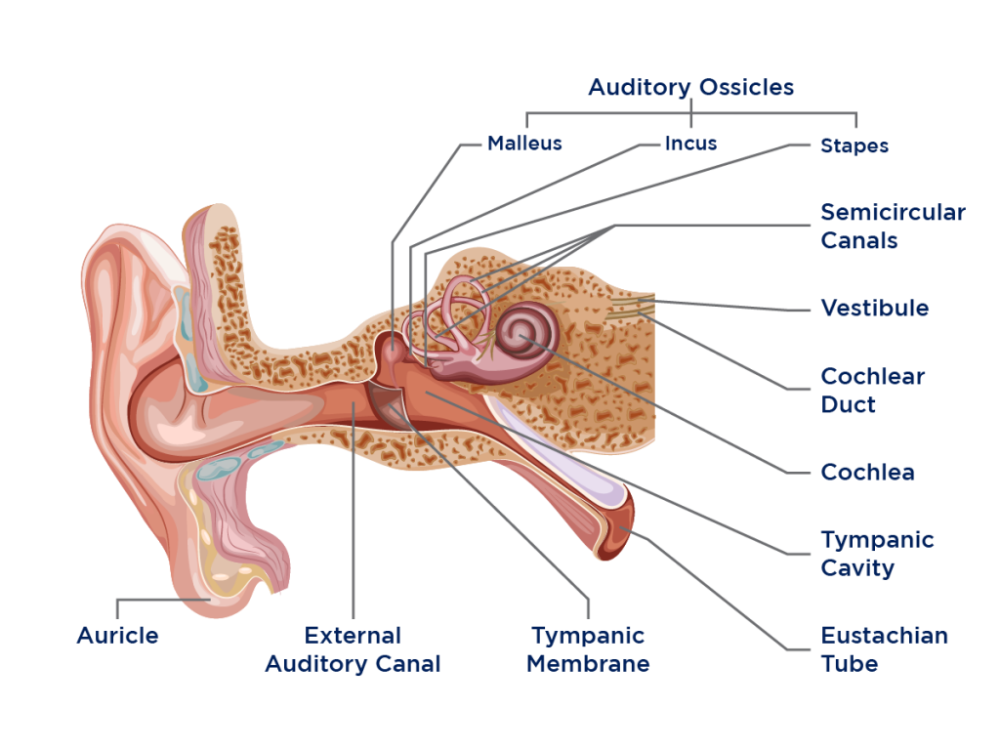 1. The auricle or auricula or pinna is the visible part of the ear that is outside the head. - Susceptible to conditions affecting skin and cartilage

- External auditory canal:
- Collects and funnels sound
- Watch for build-up of ear wax resulting in conductive hearing loss
- Tympanic membrane
- Reverberates and triggers activity in the middle ear in response to sound waves
- Watch for rupturing from noise and pressure changes, and punctures from foreign bodies like cotton (organic is worse than inorganic)
- Auditory ossicles: malleus, incus, and stapes
-
Earaches and ENT infections typically manifest here
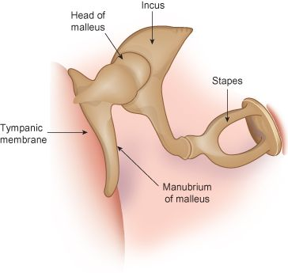 6. Cochlear - Has tonotopicity - Watch for damage as a result of natural aging induced hearing lost (presbycusis), or high level of noise 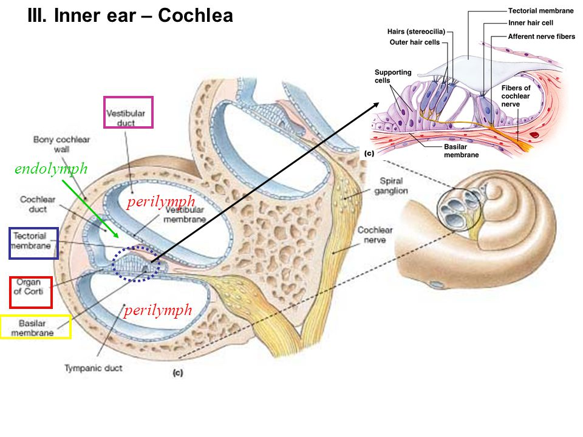 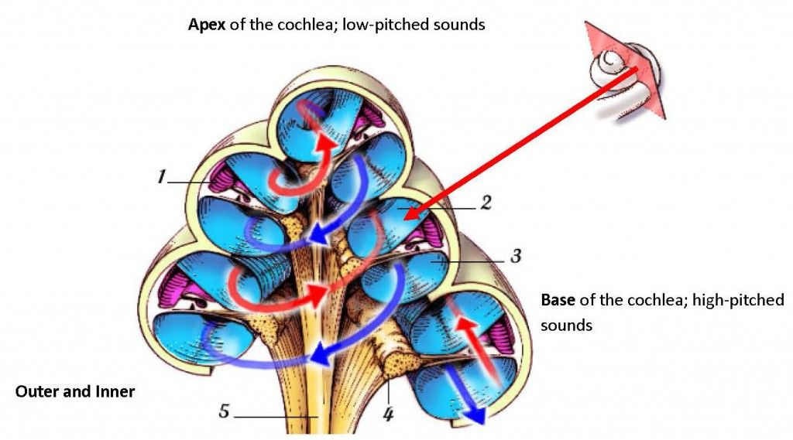 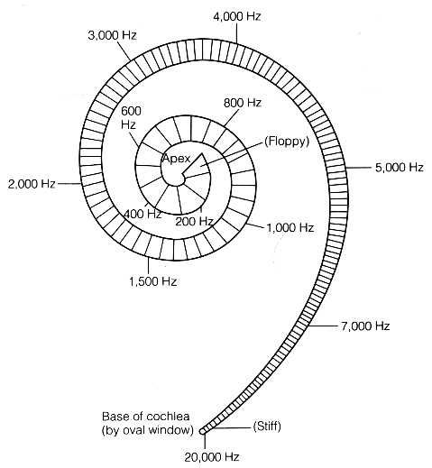
-
Vestibular System
- Helps with balance along with vision and proprioception
- Macula of utricle and saccule in the inner ear contain otolithic membranes and otoconia (particles of calcium carbonate) that bend hair cells in the direction of gravity. This response to gravitational pull, so only two is required
- Semicircular Canals of the Vestibule: superior (roll), posterior (pitch), lateral (yaw) for 3 axis of head movement 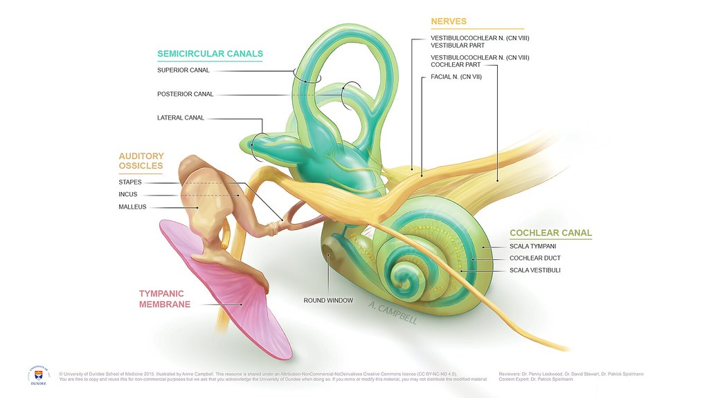 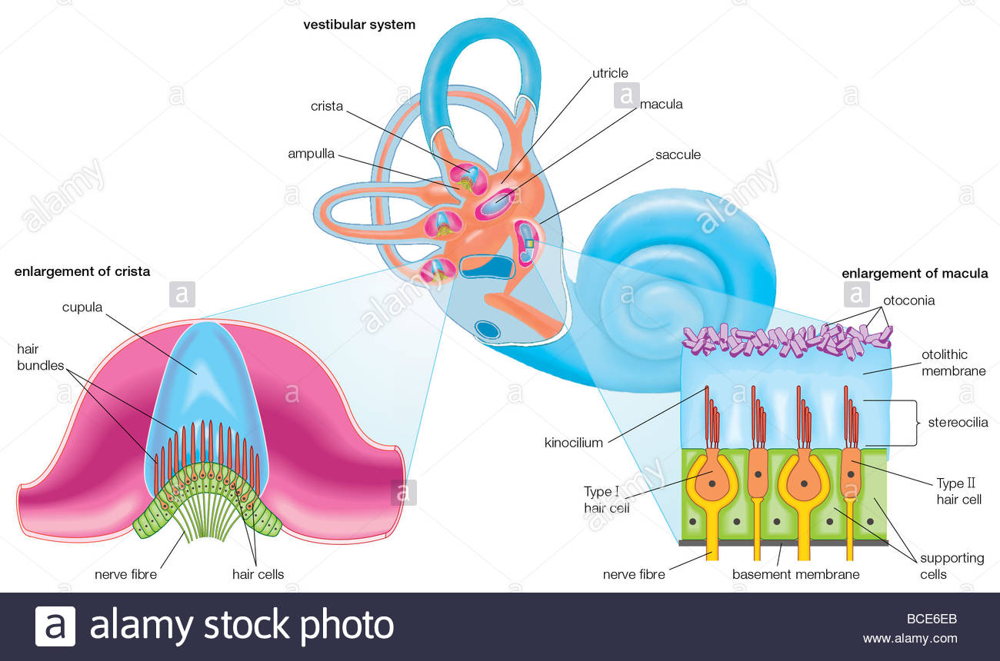 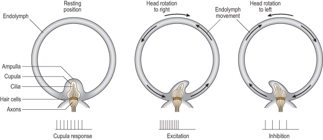 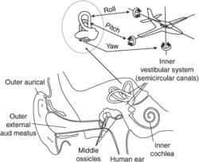
-
Nerves involved with the ear: CN VII, CN VIII (vestibular part and a cochlear part)
- Transmits information to different parts of the brain
- Watch for lesions (rare)
Basics of Otoscopy¶
Cone of light point anteriorly.
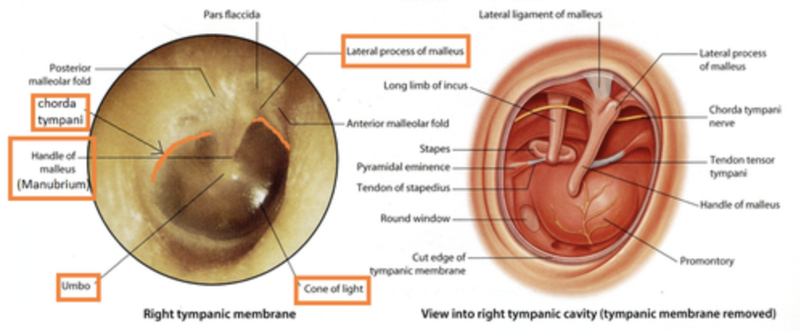
Physiology¶
Rinne and Weber Tests¶
| Condition | Rinne | Weber |
|---|---|---|
| Normal | AC > BC in both ears | Midline |
| Conductive hearing loss | BC > AC in affect ear | Lateralizes to the affected ear |
| Sensorineural hearing loss | AC > BC in both ears | Lateralizes to the unaffected ear |
| Mixed hearing loss | BC > AC in affect ear | Lateralizes to the unaffected ear |
In conductive hearing loss, Weber test lateralizes to the affected ear because the conductive deficit masks the ambient noise in the room, allowing the sound to be better heard. In sensorineural hearing loss, Weber test lateralizes to the unaffected ear because the inner ear on the affected side is impaired and does not allow sound to be heard. Rinne because abnormal if there is a component of conductive problem in hearing lost only.
512 Hz tuning fork for testing because - it is present in the mid speech frequency range - ovetones ar eminmals - sounds is more auditory than tactile in nature - tone decay is optimal Other possible range are 218, 512, and 1024 Hz
POSTIVE Rinne is Normal!
Audiometry and Audiogram¶
This is used to identify type and severity of hearing loss.
Pure Tone Audiometry - For identifying the hearing thresholds - Need a very quiet room - Audiometer can be paired with different transducers: Bone vibrator, ear phone - Other than the tones, we can also do PTA, speech, tinnitus match, loudness discomfort level, aided - International audiogram symbols are used to document audiometry findings - Get (100 Hz + 1kHz + 2kHz)/3 for quantifying abnormality - Cross hearing can happen, masking or noise presented to the no-test ear helps
Tympanometry¶
Assess the eustachian tube dysfunction
- checks the status of the middle ear cavity, by putting a probe in the middle ear. The probe has three parts, one top generates tone, one generates pressure, one measures the reflected sound
- Study the mobility of the ear drum
- middle ear compliance: 0.3 - 2.5 cc is normal
- Type Ad - Increased compliance: very thin TM, ossicular discontinuity;
- Type As - Decreased compliance: otosclerosis, thick scarring on TM
- middle ear pressure: ± 100 daPa
- B type - perforated eardrum (volume will be low), decreased middle ear mobility, effusion (volume will be high), adult normal is 1.5 ml
- C type - pressure peak, eustachian tube dysfunction
Speech Banana
Vestibular Assessments¶
Hearing Rehabilitation¶
Devices for Hearing¶
- Hearing Aids
- Cochlear Implants
Foundation for Face and Nose¶
Facial Nerve Branches¶
- Temporal branch
- Zygomatic branch
- Buccal branch
- Marginal mandibular branch
- Cervical branch
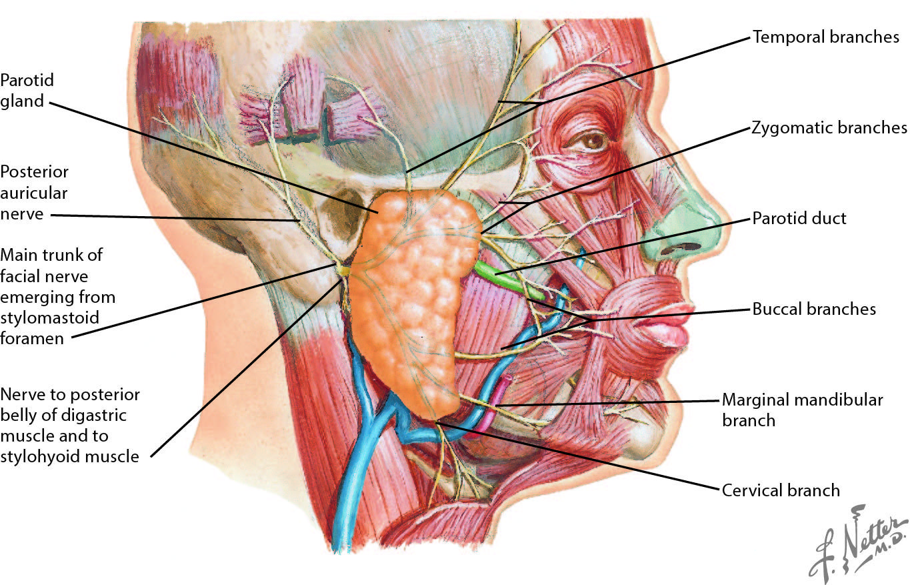
- Other Points to Notes
- In childhood, because the immune system is still developing, they may have palpable lymph nodes.
- Always think of airway in ENT conditions
- ENT emergencies: epistaxis, aero-digestive foreign bodies / airway obstruction
Paranasal Sinuses¶
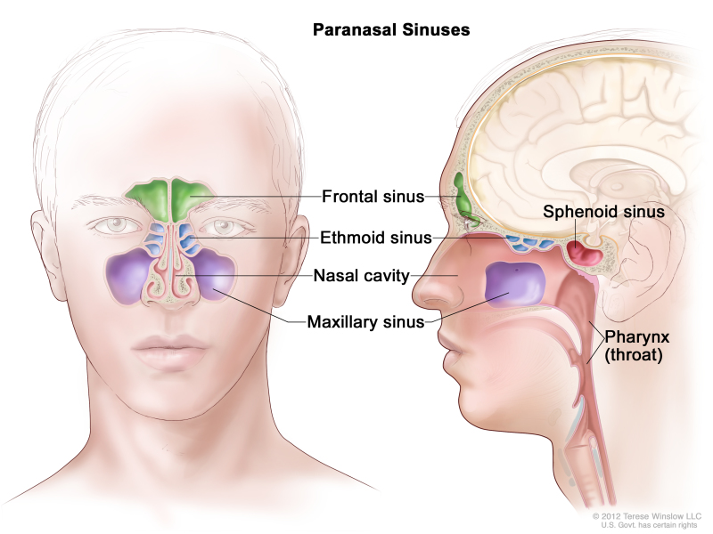
- All sinuses drains into the nasal cavity through ciliary activity.
- We produce 0.5 - 2 L of nasal mucus every day
- The mucus help to keep the nose healthy and clean
- Function of the sinuses
- Not clear
- REduce weight of the skull?
- Provide insulation for the skill?
- Provide resonance for the voice?
Foundation for Throat and Neck¶
Key Anatomy of the Throat¶
- Nasopharynx: Cuboidal structure bounded by the sphenoid bone superiorly, the posterior choanae anteriorly, the clivus and the first two cervical vertebrae posteriorly, and the soft palate inferiorly. An opening on each side of the nasopharynx leads into the ear. The adenoids are also known as pharyngeal tonsil or nasopharyngeal tonsil, is the superior-most of the tonsils, and is located in the nasopharynx.
- Oropharynx: The part of the throat at the back of the mouth behind the oral cavity. It is bounded by the back third of the tongue from the circumvallate papillae, the soft palate and nasopharynx, the side and back walls of the pharynx, the tonsils and the epiglottis posteriorly.
- Hypopharynx: Bottom part of the pharynx. It extends from the hyoid bone down to the uppermost muscle of the esophagus, which is called the cricopharyngeus muscle
- Larynx: is also called the voice box, it consists of three parts
- supraglottis - the area above the vocal cords that contains the epiglottis cartilage.
- glottis - the area of the vocal cords.
- subglottis - the part below the vocal cords, containing the cricoid cartilage that continues down into the windpipe. 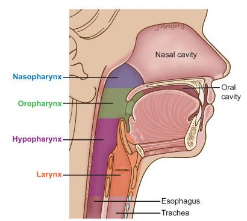
Voice Testing¶
Cricothyroidotomy¶
A cricothyrotomy is an incision made through the skin and cricothyroid membrane to establish a patent airway during certain life-threatening situations, such as airway obstruction by a foreign body, angioedema, or massive facial trauma.
Tracheostomy and Tracheostoma¶
Indications - Prolonged intubation more than 2 weeks
Maintenance - Tracheostomy tube may be dislodged, place hand over the tracheotomy tube to check for the presence of airflow
Tracheostomy vs Tracheostoma
Complications - Intraop injury to structure - Pediatric patients are good at scarring, need 6 month evaluation to remove granulation tissue - Tracheostomy tube is rubbing
Associated Devices - Laryngeal button; helps prevent - TEP prosthesis
Other Topics¶
Allergy Testing¶
ENT Cases to Note¶
Vertigo in 55 year old man¶
55 year old man, nasal infection with left facial pain for past 16 days, increasing left facial pain involving left despite Klacid MR 500 mg bd for one week. Subsequently Augmentin 1g bd was prescribed with Predisone, cetirizine,
Resting nystagmus, fast phase left beating, more obious with Frenzels with obeys Alexandar law. No skew deviation and oculomotor tests were normal. Able to walk without aid. Audiogram shows normal hearing in the speech range. DHI scoring is 70% F32P18E20. Admitted for IV antibiotics and bed rest, also councelled about gaze stabilization exercises, nasal swab culture is pending.
symptoms of nasal infection with left facial pain for 16 days just as he was getting better, he had vertigo and sore throat.
- Left beating nystagmus differentials
- Fast phase beats to normal peripherally i.e. peripheral right weakness
- Fast phase beats to problem centrally i.e. early stroke
- Frenzel's goggles
- Stopbang scoring for OSA
ENT Frameworks¶
- Hearing implants
- Bone conduction implant
- Cochear implant
- UNHS
- Detect 3 months, intervene 6 months
- Hx
- development milestones
- risk factors for hearing loss
- Sudden hearing loss
Hearing Loss¶
Anatomy¶
- Perilymph resembles CSF
- Endolymph resembles intracellular fluid
- Stria vascularis actively pump K to maintain K difference
- Difference in chemical composition provides electrochemical energy that powers the sensory cells
- Organ of Corti
- Outer and inner hair cells; more outer than inner hair cells.
- Scalar media has high Na and low K, other two portion has the opposite amount of eletrolytes. Electrodes in cochlear implants should be inserted into the scalar tampani
- Hair calls -mechanoreceptors that convert mechanical stimuli into neural information
- Stereocilia at aical end arranged in rows
- Tip links between stereocilia
- Deflection of stereocilia causes tip link to piull on transduction channels, opening/closing them
- Movement of K and Ca
- Depolarization and repolarisation
- Outer hair cells amplify basilar membrane motions (OAE) -> cochlear amplifer
- 95% of all afferent auditory nerve fibers make contact with the inner hair cells
Otoacoustic emissions is an objective test.
Tonotropic organisation of the cochlea: from basal turn to apical turn progressively sense decreasing frequency; basal is lost before apical.
1khz is most sensitive frequency, audible frequency is 20 - 20 k Hz.
Loudness is measured in decibels. In audiogram it is important to look for the speech banana. All human 20 - 45 dB. know the definitions of different amounts of hearing loss.
Auditory system - pinna - funnel shaped collects sound waves and aids sound localization - Middle ear - Impedence matching: sound energy not loss when travelling from air to liquid - Ear's ability so that sound energy is not lost when traveling from air to liquid (outer to inner ear) - Area effect: tymapnic membrane to footplate area 17;1, energy from a large area is concentrated into a small area, - Level action: handle of malleus to long process of incus = 1.3:1 - Transformer ratio = 17 x 1.3 = 22.1 = 25 dB; not only conserve energy but also - Natural resonance and efficiency of outer and middle ear - 500 to 3KJz - Phase difference between oval and round windows. - Auditory brainstem response: EECOLI to identify the response. - Eight nerve distal - wave 1 - Weight nerve (proximal) - wave 2 - Cochlear nucleus - wave 3 - Olivary complex (superior) - wave 4 - Lateral lemniscus - wave 4 /5 - Inferior colliculus - wave 5 - 2 ears better than 1 - Biaural hearing allows for sound localization due to interaural level difference and interaural time difference - Squelch effect: The binaural squelch effect is a result of nuclei of the brainstem processing timing, amplitude, and spectral differences between the two ears. Sounds are integrated and then separated into auditory objects. For this effect to take place, neural integration from both sides is required.
Ear Pain (Otalgia)¶
Red flags - Severe otalgia - immunocompromised / DM / debilitated - LMN 7th nerve palsy with abnormal looking ear - Neurological signs and symptoms
Look at the skin, skin lesions resulting in otalgia: eczema, contact dermatitis, basal cell carcinoma, scc, pinna hematoma
Perform ear examination - If normal: referred otalgia - dental disease - temporomandibular joint disorders - mucosal head and neck SCC - If abnormal - otitis external - otitis media - foreign body - trauma
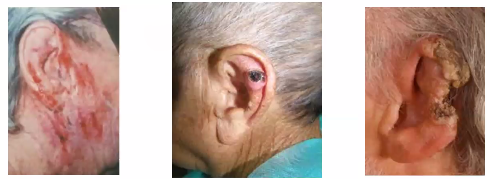
Ear Discharge¶
Tinnitus / Deafness / Hearing loss¶
Congenital Deafness vs Acquired Deafness - Cerumen impaction
Facial Palsy: LMN¶
Entire face is implicated unlike in UMN facial palsy
Investigation of Facial Nerve Palsy - Grade - Audiogram - Imaging - MRI IAM for - ENoG for prognosis: faciak weakness grade 6 , do ENoG within 5 days to 2 weeks; >95% degeneration poorer prognosis for recovery; In America patients may be offered a complete decompression surgery
Differentials - Ramsay Hunt Syndrome - Lyme Disease - Horner syndrome due to a superior pulmonary sulcus (Pancoast) tumor. - CT scan of the head could reveal a CNS lesion (eg, medullary infarction), which can sometimes cause Horner syndrome. - Nerve conduction studies (combined with electromyography) are often performed to help diagnose peripheral nerve disease (eg, neuropathy, nerve entrapment).
Facial Pain¶
- suppurative parotitis
- mumps parotitis
- tetanus
- temporomandibular joint dislocation
- malignant hyperthermia
Parotid Gland Swelling¶
- Bilateral, non-tender - sialadenosis (alcohol, vit A def)
- Bilateral, tender, after fever headache myalgia a few days prior - mumps
- Bilateral, nontender, associated with dry mouth typically in woman - Sjogren syndrome
- Unilateral, nontender - pleomorphic adenoma
- Unilateral, tender, fluctuating, associated with eating - sialolithiasis
Nasal Discharge¶
Bleeding - Trauma - Blood dyscrasia
Rhinnorhea - allergic, irritant-induced, corrosive rhinitis - cerebrospinal fluid rhinorrhea - intranasal cocaine use - rhinitis medicamentosa
Jaw pain¶
- Giant Cell Arteritis
Sore Throat¶
- Odynophagia
- Dysphagia
- Globud
- Heartburn
- Acid burn
- Odynophonia
- Dsyphonia
- Aphonia
History taking - Describe your sore throat or throat discomfort - pain on swallowing - any difficulty swallowing - food is stuck feeling - sharp poking sensation, ask for hx of fb - duration - worse in mornings or and of the day - any voice change, occupation, recreational voice use, abuse - any breathing difficulties - Etiology - Fever, urti, contact history, cough, productive, - muffled voice, drooling, - neck pain/swelling, - bodily rash - hematuria - blood in sputum - loa / low constitutional - risk factors for cancer of upper aerodigestive tract -> smoking, alcohol - dietary habits to identify risk factors for acid reflux aka larynopharyngeal reflux
Physical exam - Vitals: temp SpO2 - General status: GCS, respiratory distress, drooling, use of accessory muscles (sternocleidomastoid, mascating, pec major, supersternal costal muscles) - ENT exam: oral cavity and oral pharynx exam
Differential - Nasophargynx: strep A - Oropharygnx: tonsilitis - Hypophargyngeal: cancer - Laryngeal: GERD/LPR, laryngitis (viral or bacterial), laryngeal lesions (benign or malignant) - Vocal cord nodule has to be a pair
Painful Neck in ENT¶
Neck is a tunnel
Anatomy - SCM and trapezius - Strap muscles - Paraspinal muscles - Prevertebral muscles - Neurovascular structures: internal jugular vein, carotid artery, - Aerodigestive tract: Laryngx and esophagus
Abscesses occur at extremes of ages
5 cardinal signs of inflammation Restriction of movement: ROM, torticollis Complications: name some regions - Airway complication - Mediastinal complication - Cranial complication History of - Immunocompromised - URTI - TB contact - FB, dentures, dental Investigation: - biochemical: CBC, CRP - radiological: lateral neck x-ray, ct - occasionally aspiration: see if we get pus and if we get pus but not getting better with antibiotics, do incision and drainage Management - I&D: Marginal mandibular branch of the facial nerve need to be avoided by going two finger breath below the mandibular bone - Neck abscess drainage - Submandibular gland excision
Neck only incision and drainage, cannot KIV saucerization
Voice Disorder / Hoarseness¶
Physiology of voice (nerve, muscles) - Phonation: generation of sound by vibration of VC - Resonance: induction of vibration in the rest of vocal tract - Articulation: shaping of voice into words
History - Define hoarseness - Onset and duration - Constant vs intermittent - Intermittent: dynamic causes e.g. muscle tension dysphonia - Aggrevating symptoms - Worse at the end of the day e.g. use? - Worse in the morning - After a cough e.g. postinfection laryngitis Associated symptoms - Common symptom complexes - RED FLAGS: blood - COMPLICATIONS: a lot about airway Past medical history - Medications - Surgeries - thyroid - Recurrent laryngeal nerve - External branch of superior laryngeal nerve (pitch change, cannot hit high notes) - Anterior decompression of the cervical spine - Cardiac surgery damagin the branch of the recurrent laryngeal nerve around aorta - Previous illnesses/cancer Social history: smoking drinking Functional needs: talkativeness profile, vocal commitments or activities Patient's wishes - VHI - voice handicap index - Patient perception of severity is important
Physical exam - Look - General appearance - Respiratory distress/stridor - Neurological disorders e.g. muscles, myasthenia gravis - Cachexia e.g. chronic malignant problem, systemic deterioration - Neck Scars - Listening - Assess voice e.g. rainbow passage for patients to read, and ask for full name and address - GRBAS scale (grade, roughness, breathiness, asthesia, strain) - Grade is the overall severity after looking at RBAS - 0, 1, 2 highest of the other categories - Roughness is like overused voice - Breathiness is like vocal cord - Asthesia is like strangulated voice - Strain is like talking forcefully to get sound out - Mean phonation time (10 seconds or more is normal) - Feel - Head and neck examination - Nasoendoscopy - Alternate sniff and saying E - check if cord close, if one of the cords is compensating well - Cranial nerve examination (IX, XI, XII) - KIV videostroboscopy
Differential Diagnosis (KITTENS method) ![hoarseness differential]
Differentials for vocal cord immobility - surgery: thyroid, cervical spine fusion, - malignancy: lung / not lung - Idiopathic - Neurologic - Inbutation - Non surgical trauma - Aortic ardiac: ortner's syndrome (hypertrophy of right atrium) - criococartilage Investigation for vocal cord immobility - CT skull base to thorax - EMG Management - depends on diability, aspiration, cause, prognosis, patient's wishes - speech therapy - temporary: vocal fold injections - Permanent, do laryngoplasty or thyroplasty, Japanese are good for voice treatment
Spot diagnosis 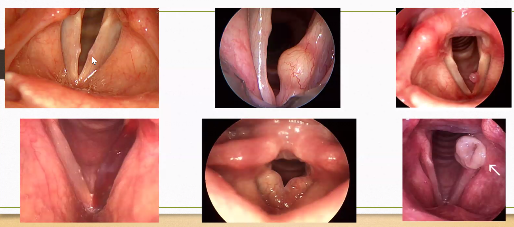 1. Vocal cord nodule - voice training is the best 2. Left vocal cord subepithelial cyst- incision and drainage, another type is ligamental cyst, worry contracoul leasion 3. Polyp - excise 4. Hemorrhagic cord - overuse, NSAIDs 5. Reinke's edema (bagging vocal cords) 6. Intubation trauma
Management - if goes beyond superficial level of vocal focal, will definitely have scarring - injection of vocal cord fillers to give it bulk; if injection for vocal cord palsy, to make the immobile cord central so as to make the job of the mobile cord easier 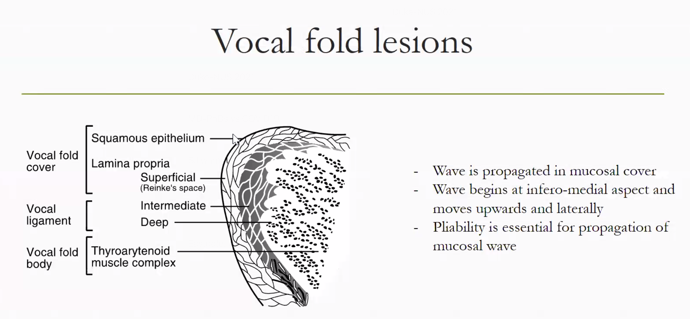
HNN Lumps and Masses¶
History - When was the lump first noticed (duration) - What made the patient notice the lump (first symptom) - What are the symptoms related to the lump (other symptoms) - has the lump changed since it was first noticed (progression) - Does the lump ever disappear (persistence)? What makes the lump to reappear - Has the patient ever had any other lumps (multiplicity) - What does the patient think caused the lump (cause) - There is loss of body weight (constitutional symptoms) - Family history - Prior treatment history - Social history for risk factors
Suspicious History - Mass lasts longer than 2 - 3 weeks - Mass gets larger - Mass does not completely go away - Voice changes - Trouble or pain with swallowing - Trouble hearing or ear pain on the same side as the neck mass - Persistent neck or throat pain - Unilateral
Physical History Look | Feel | Move |---|---|--- Number of lumps, shape, site and extension, size, overlying skin (presence of ulcers, discharging sinuses) | temperature, tenderness, surface (smooth irregular nodular), edge (well defined, indistinct), consistency (stony hard, firm, rubbery, spongy, soft)
Anatomy is important to form a differential diagnosis and guide investigation choice In the differential diagnosis the three most important categories to distinguish are: infective/inflammatory, congenital and neoplastic (or thyroid) masses.
Appropriate investigations are guided by differential diagnosis
Neck Masses¶
Submandibular
- Actinomyces lymphadenitis: submandibular mass with a draining sinus tract, typically occurs after dental infections or trauma in immunosuppressed patients and the sinus tract drain sulfur granules. Regional adenopathy is unlikely because the infection spreads by direct extension, ignoring normal tissue planes. rare infection presenting as a slowly progressive, nontender mass that can form abscesses and draining sinus tracts with characteristic yellow "sulfur granules".
Midline
-
Thyroglossal duct cyst: tract between foramen cecum and base of anterior neck, cystic and moves with swallowing or tongue protusion, often presents after URTI.
-
Dermoid cyst: cystic mass with trapped epithelial debris, occurs along embryologic fusion planes, no displacement with tongue protusion
Lateral
-
Branchial cleft cyst: anterior to the SCM, tract may extend to the tonsillar fossa (2nd branchial arch) or pyriform recess (3rd branchial arch), often detected when it becomes secondarilyu infected after URTI, leading to
-
Reactive adenopathy: firm and often tender and multiple nodules
-
Mycobacterium avium lymphadenitis: necrotic lymph node, violaceous discoloration of the skin, frequent fistula formation
-
Laryngocele is an outpouching of the laryngeal mucosa that can be congenital or acquired. If it protudes through the thyrohyoid membrane, it can present as a lateral neck mass. It characteristically enlarges with Valsalva maneuver due to inflation with air. Acquired laryngoceles are classically seen in glassblowers or trumpet players due to repeated, intense oropharyngeal pressure.
Posterior
- Cystic hygroma: dilated lymphatic vessels, and presents as a lateral cystic neck mass . It occurs most commonly in the posterior triangle of the neck and is typically diagnosed at birth or on prenatal ultrasound.
The Catarrhal Child¶
Typical presentation
-
Gets 6 - 8 URTIs a year
-
In a childcare setting, this increases 4x to 24 - 26 times
-
Paraents complain that the child is perpetually having flu
-
Child may be subjected to several rounds of antibiotics and other symptomatic treatment; especially if they doctor hop.
Snoring and OSA¶
Stages of sleep | Remark |---|--- Awake | 1 - non REM | Very light sleep 2 - Non REM | 3 - non REM | Immune system and repair during this period REM | Required for converting short term to long term memory
Functions of Sleep 1. Restoration 2. Regeneration
Systematic Conditions with ENT Manifestations¶
Alport Syndrome¶
Lamellated basement membrane Can cause hereditary SNHL due to damage of the basement membrane in the cochlea. Presents with recurrent hematuria in childhood.
Granulomatosis with polyangitis¶
Vasculitis that commonly cause ear (otitis) and nasal (rhinorrea, bloody discharge) symptoms. Patients usually have systematic manifestations including fever, malaise, weight loss, and ulcerative lesions.
Giant Cell Arteritis¶
Present with pain while chewing (i.e. jaw claudication), but patients generally report pain the raw rather than otalgia. It rarely occurs in patient < 50 year old.
Glossopharyngeal neuralgia¶
Presents with intermittent, severe, stabbing pain in areas innervated by the glossopharyngeal and vagus nerves (CN IX and X), which includes the ear.
Relapsing polychondritis¶
An inflammatory condition that can affect any cartilage in the body but most commonly affects the cartilaginous portions of the ear (the ear lobule is unaffected because it has no cartilaginous structure). The ear canal is less affected than the pinna.
General Neck Conditions¶
Ludwig's Angina¶
Ludwig angina is a rapidly progressive bilateral cellulitis of the submandibular, submental, and sublingual spaces, most often multibacterial arising form an infected mandibular molar, with potential airway obstruction from retropulsion of the tongue.
Most cases arise from contiguous (rather than lymphatic) spread of polymicrobial dental infections in the mandibular molars. This contiguous spread results in bilateral edema of the submandibular and sublingual spaces. As the submandibular area becomes tender and indurated, the floor of the mouth becomes elevated and displaces the tongue posteriorly, which may lead to acute airway obstruction. Additional clinical features of Ludwig angina include a neck that is often described as "woody" or "brawny" but has no associated lymphadenopathy.
Presentation
- fever, dysphagia, odynophagia, and drooling
Management
- As with other lesions that threaten the airway, patients with examination findings concerning for impending airway obstruction (eg, drooling, inability to lay flat, tripod positioning) should have their airway secured, regardless of current oxygen saturation. This is because oxygen saturation is often maintained until very rapid decompensation (within minutes). Therefore, these patients require continued assessment and, if needed, intervention to secure the airway (eg, nasotracheal intubation, awake tracheostomy).
Nontuberculous Mycobacterium Lymphadenitis¶
Can present as a neck mass in children. It is typically slow growing lateral neck mass with overlying violaceous discoloration of the skin.
Spinal epidural abscess¶
These can be caused by hematogenous dissemination (e.g. intravenous drug abuse), contiguous spread from vertebral osteomyelitis, or direct inoculation (e.g. epidural anesthesia). Symptoms include fever, focal back pain, and neurologic deficits.
Retrophargyngeal Abscess¶
Presents with neck pain, odynophagia, and fever. May be due to penetrating trauma to posterior pharynx. Examination findings may include nuchal rigidity and bulging of the pharyngeal wall. These can progress quickly with potentiall fatal complications.
Infection within the retropharyngeal space drains inferiorly to the superior mediastinum. Spread to the carotid sheath can cause thrombosis of the internal jugular vein and deficits in cranial nerves IX, X, XI, XII. Extension through the alar fascia into the danger space can rapidly transmit infection into the posterior mediastinum to the level of the diaphgram. Acute necrotizing mediastinitis is a life-threatening complication characterized by fever, chest pain, dyspnea, and odytnophagia, and reuqires urgent surgical intervention.
Carotid Artery Rupture¶
Carotid artery rupture occurs when the vasa vasorum supplying the carotid is injured; it is most often a complication of head and neck cancer (eg, tumor invasion, tissue removal).
Surgical Neck Hematoma¶
Patient with enlarging fluid collection (ballotable neck swelling) after thyroidectomy likely has an expanding neck hematoma, or vascular compression causing venous congestion leading to laryngeal edema. Stridor, dysphagia, voice changes, with tripor positioning are all signs of increasing upper airway obstruction; however, patient can initially have few or no symptoms (e.g. only mild neck tightness). Patient can often maintain their peripheral blood oxygenation concentration until rapidly (\<1 min) decompensation.
Presentation
- dysphagia, hoarseness, and shortness of breath: due to edema in the posterior pharyngeal wall
- most likely to extend through the alar fascia into the "danger space", which can then progress into the posterior mediastinum and result in acute necrotizing mediastinitis.
Management
-
Immediately evacuate the hematoma (including at the bedside if necessary) by re-opening the incision and removing blood collection
-
The wound should then be explored in the operating room to control the source of bleeding, and the the patient's airway should be evaluated to assess for laryngeal edema and need for protective endotracheal intubation (until the edema subsides).
Head and Neck Squamous Cell Carcinoma (HNSCC)¶
Most cancers of the head and neck arise from squamous epithelial cells that undergo stepwise, premalignant changes (i.e. hyperplasia to dysplasia to carcinoma). Lesions may initially manifest in the oral cavity as hyperplastic or dysplastic white (Leukoplakia) or red (erythroplakia) patches (which is likely what as noted on the patient's initial biopsy). Because these lesions are at right of malignant transformation, patients require counseling regarding risk reduction (e.g. tobacco chewing cessation), regular examination of the oral cavity, and rebiopsy if changes (e.g. thickness, firmness) are seen. If bioosy results are cancerous, regional metastatic spread to the cervical lymph nodes is highly likely; therefore, a CT scan of the neck with contrast should also be obtained, both to evaluate the extent of invasion and characterize the metastatic nodal spread.
Risk factor - older age (>40) - tobacco - alcohol exposure - poor dentition - immunocompromised status
Presentation - Orophargyngeal SCCC may present with sore throat and odynophagia due to tumor invasion or local irritation. - Referred otalgia (ear pain in the setting of a normal ear examination is often referred otalgia) - Persistent enlarged firm neck mass and ulcerated / friable tonsillar lesion - A/w pharyngitis, dysphagia, halitosis
Management - Biopsy of lesion with evaluation of HPV status (for tonsil lesion) - neck imaging to characterize lesion and associated nodal metastasis - endoscopic evaluation of the aerodigestive tract
HPV-positive HNSCC¶
Often seen in younger patients with NO tobacco exposure and multiple sexual partners. HPV-positive HNSCC primarily affects the oropharynx (possibly due to the higher concentration of lymphatic tissue facilitating viral processing) and often with neck lymphadenopathy.
It is more responsive to therapy than HPV negative NHSCC. The most common causative agent is HPV-16, which is covered by the HPV vaccine.
non-Hodgkin Lymphoma¶
Causes tonsillar enlargement rather than ulceration and is usually seen in patients with immunosuppression or autoimmune diseases.
Cervical reactive Lymphadenopathy¶
Very common in children, often presents as an enlarged neck mass following an upper respiratory tract infection. It is typically lateral, often involves multiple nodes, and does not move with swallowing.
OSA¶
Recurrent episodes of upper airway collapse and obstruction of sleep.
Pathophysiological mechanisms include - Snoring is due to excessive vibration of the upper airway. It is a type of trauma. - Sleep physiological changes - Increased sympathetic activation is maintained throughout the day - More negative intrathoracic pressure due to mechanical stress of breathing through a narrowed airway
Epidemiology - 15 - 30% of Singapore population - It is important for everyone to have some working knowledge of OSA
Clinical Presentation - Nocturnal Symptoms - Loud snoring, apneic, gasping episodes - Frequent awakening for peeing: due to overall light sleep, nocturi - wake up more than 2 times to pee Due to increased pee s/s Renin angiotensin activation - Day time Symptoms - Excessive daytime sleepiness - Un-refreshed sleep: cannot enter deep sleep - Sore throat - ... - Sequelae of OSA - Cardiac: uncontrolled HTN, young HTN - Pulmonary hypertension: due to increased stress on pulmonary circulation - Metabolic: DM - Urology: Nocturia, ED - Eye: Recalcitrant glaucoma (due to chronic oxygen deprivation)
Risk factors - Age - Gender: progesterone increase the quality of soft tissue, becomes more elastic, so less liable to collapse; before menopause, the male:female ratio is 3:1, after is about 1:1; Also to do with fat distribution. - Genetic / family history - Craniofacial features : Chinese - influence the size of airways - Obesity - Alcohol use at night: reduces muscular tone; alcohol facilitate falling asleep, but breathing disruption and changes in sleep architecture induced, sleep maintenance becomes an issue, and the sleep quality is reduced - Supine position - Nasal congestion - Allergy
Complications AHI is correlated with increase mortality; Deduction in survival increases with severity of the condition.
Diagnosis - Initial clinical assessment - STOP-BANG - Final Diagnosis still require Sleep study and polysomnogram - Inpatient: 1 night stay in hospital - Outpatient: in patients with high pre-test probability, record breathing deceleration during sleep for formal diagnosis
Management - Severity grading Apnoea–Hypopnoea Index (AHI) | Level | Remark |---|---|--- <5 | Normal | Simple snorers are treated if it disrupts partner sleep 5 - 15 | MIld 15 - 30 | Moderate | Increased Cardiovascular risk
30 | Severe | Increased Cardiovascular risk - Multimodality-multidisciplinary approach - Patient education - Sleep hygiene - Quantity: at least about 7 hours, less and more fragmented as we age, but still more than 6 over a day - Quality: Keep day naps short (~30 min), short power nap leaves us feeling more refreshed if we don't enter the deep stage of the sleep - Weight management - In Asian: cranial facial characteristics - In Caucasian: obesity - weight management becomes more important - Conservative management - PAP sleep technicians: Positive airway pressure (4 - 15 mm H2O above atm to keep airway open) - CPAP is not medisave claimable: government does not pay for devices - BiPAP in very obese patients: different pressure during inspiration and expiration; resp doctors are better at titrations - Active management: - Sleep physician - Dental treatment: dental mandibular advancement splints - Patients need to have teeth - Patients with very lax tissues cannot benefit very much - Select candidates with dentists - Airway surgeons: - Indications - Initiate CPAP use when patients have congested upper airway and are likely to feel very uncomfortable with CPAP; simple surgery is done to open up the airway to increase compliance; - Improve CPAP compliance: limited surgery can also be done if there is regional discomfort - Surgical cure - Types of Surgery - Maxillofacial retrognathism - maxillofacial surgery - Conventional amxillomandibular advancement: linear anterior positioning of maxillomandibular complex by ≥1cm; maxillar advanced to same large degree to reestablish the occlusion modified by advancement of amndible - Bariatric surgery for obesity - Upper airway soft tissue surgery by ENT: isolated UPPP 41%, multi-level 60-66% - Nasal surgery is only useful for simple snoring and mild OSA; facilitate CPAP use, part of multlevel soft tissue surgery - Pharyngeal surgery: Efficacy of UPPP as isolated procedure regardless of patient selection is 40%; Success can be achieved in up to 80% in carefully selected patients - Tongue base and epiglottis surgery - Goal of treatment - Prevent further episodes of MI / stroke - Reduction of HTN medication doses - Home based monitor devices - meical device 80% - Mobile APP - movement as a surrogate has problems, accuracy is also dependent on how
Ears¶
Benign paroxysmal positional vertigo (BPPV)¶
Causes acute onset vertigo that can be associated with nausea and vomiting and intact hearing.
Vertigo in BPPV is thought to be caused by calcium carbonate debris in the semicircular canals.
BPPV typically causes episodic rather than constant vertigo that is triggered by positional change as calcium debris moves within the semicircular canals. Symptoms usually resolve several seconds to minutes following position change in BPPV.
Physical Exam
- Dix-Hallpike Maneuver - Turn the patient's head to 45 degrees and quickly lay him down supine with his head just over the end of the exam table. Then turn the head to the side which should reproduce the symptoms of dizziness and produce nystagmus. Observe for 20 to 30 seconds. If present, the nystagmus will have the fast component in the direction of the pathology. Next, sit the patient up and observe again for nystagmus.
Diganosis is clinical based on history and physical exam
Management
-
The Epley maneuver, or canalith repositioning, is the hallmark of treatment for BPPV. The etiology of vertigo in BPPV is the presence of calcium debris in the semicircular canals. Through careful positioning of the patient, the Epley maneuver relieves symptoms by returning the deposits back to the vestibule. The maneuver can be performed in the clinic and modified by the patient at home. To perform the Epley maneuver for right-sided symptoms, the patient sits on the exam table with his head turned 45 degrees to the right. With the clinician supporting the head, the patient quickly lies back with his head hanging over the exam table supported by the clinician as in the Dix-Hallpike test. Once the nystagmus has stopped, the clinician turns the head 90 degrees to the left and the position is held for 30 seconds. Next, the patient rolls onto his left side, with his face at a 45 degree angle to the floor. This position is held for 30 more seconds. The patient returns to the sitting position now with his legs off the left edge of the table. After another 30 seconds, the patient can resume normal head position. The maneuver can also be repeated on the other side. Repositioning maneuvers are not effective for the treatment of vertigo not caused by canalith debris.
-
A Cochrane review found \"There is moderate to strong evidence that vestibular rehabilitation is a safe, effective management for unilateral peripheral vestibular dysfunction, based on a number of high quality randomized controlled trials.\" Patients can be trained in vestibular rehabilitation by a physical therapist.
-
Vestibular suppressant medications can be effective short-term treatment of vertigo. Commonly used anticholinergic vestibular suppressants such as meclizine and dimenhydrinate also have some anti-emetic effects that are useful in controlling the nausea and vomiting associated with vertigo. Anti-emetics can be a useful adjunct in select patients. Non-selective phenothiazine anti-emetics, such at metoclopramide and promethazine, can be effective. Since all these medications can also cause sedation, they should be used acutely only and avoided in the elderly.
Vestibular neuritis¶
Commonly associated with a recent URI.
Results when a viral (or, less commonly, bacterial) infection of the inner ear causes inflammation of the vestibular branch of the eighth cranial nerve.
Nystagmus caused by a peripheral lesion such as this does not change direction with gaze.
Acute labyrinthitis¶
Similar to vestibular neuritis in that it is associated with recent URI and follows a similar clinical course.
Distinguished from vestibular neuritis by its associated hearing changes (not present in the former).
occurs when an infection affects both branches of the eighth cranial nerve resulting in tinnitus and/or hearing loss as well as vertigo.
Vestibular migraine¶
Vestibular migraine is a variant of migraine that can cause central vertigo.
Most patients will give a history of previous migraine headaches. However, at the time of a vestibular migraine, many patients do not have a headache.
This is a central cause of vertigo, which can be distinguished by a careful exam.
Meniere's disease¶
Episodes of unilateral hearing loss, tinnitus, and vertigo form the classic triad of Meniere's disease.
Management
- Diuretics and a low salt diet are commonly used to treat the vertigo of Menière's disease following reasoning that use of diuretics will decrease the endolymphatic pressure and abate symptoms. A 2006 Cochrane review noted that there were \"no trials of high enough quality\" to allow a recommendation for or against the use of diuretics in the treatment of Menière's disease.
Otitis Media¶
Otitis media can occasionally be a cause of vertigo. After a recent upper respiratory infection, otitis media is a possibility; however, patients with otitis media usually have ear pain and an abnormal ear exam. Fever also commonly accompanies otitis media.
Uncomplicated otitis media¶
-
Management
-
If >2: observation without prescribing antibiotics
-
6mth - 2yr: cautiously observed first - depending on the certainty of the diagnosis, social supports, and clinical picture
-
children less than six months should be treated with antibiotics
-
External Ear Conditions¶
Microtia¶
Severity | Grade 1 Grade 2 Grade 3 Grade 4
- 6 - 20 th week of gestation
- first arch
- first hillock -> tragus
- second hillock -> helical crus
- third hillock -> helix
- second arch
- fourth hillock -> antihelix
- fifth hillock - antitragus
- sixth hillock - lobule and lower helix
Oral atresia is assocaited with microtia; microtia almost always have oral atresia and not the other way around.
Pinna Hematoma¶
Risk Factors - Frequent falls - Minor trauma - Anticoagulation
Progression - Califlower ear when the cartilage dies - Difficulty fitting hearig aid later on - Blockage of the ear canal resulting in conductive hearing lost
Management - Local anesthesia - Anti-helix cut and drain the hematoma, pressure dressing to prevent blood from re-accumulating - Dental role of pressure dressing onto the ear
Pinna Perichondritis¶
Unlike cellulitis of the pinna, there is ear lobe sparing, so only the top two thirds, where there is cartilage, will be affected. Usually due to
Risk Factors - Young people with ear piercing - Old people complication of otitis externa
Complication - Califlower ear due to pinna necrosis and deformity
Management - Quinolone e.g ciproflocixin - 3rd gen cephalosporin
Perichondritis, an infection of the perichondrium, can present with a painful, erythematous ear. However, erythema and tenderness would be limited to the cartilaginous portions of the ear; the mastoid bone would not be affected.
Cellulitis of the Pinna¶
Entire ear is affected due to break in the skin, caused by skin organisms e.g. Staph and Strep
Management - Penicilin - Outpatient oral, inpatient IV if severe.
Foreign body of the ear¶
Normally not a problem, unless there is - Drown live insects with olive oil; but local anesthetic is better because the patient will be less distressed with the sensation of insect dying in their ear. - Organic product, when wet induce inflammation, and can be painful
Otitis Externa¶
Also known as swimmer's ears; infection of the skin in the external ear canal, typically due to Pseudomonas aeruginosa. Characterized by otic pain, erythema, edema, and purulent discharge. Otitis externa can occur in adults but is more common in children and adolescents. Otitis external occurs frequently after swimming in outdoor water sources due to alteration of the ear canal pH, maceration of the skin, and introduction of bacteria into the ear canal. Cerumen is acidic and has antibacterial properties; loss of cerumen due to swimming or excessive ear cleaning increases the risk of otitis externa. Factors that disrupt the skin barrier (e.g. eczema, psoriasis, trauma) or retained foreign material and water in the canal (e.g. headphones, hearing aids) also increase the risk.
The most common pathogenic organism in otitis externa is Pseudomonas aeruginosa, which grow in water. Empiric treatment regimens for Pseudomonas aeruginosa should include drugs with antipseudomonal activity (e.g. fluoroquinolone drops). Staphylococcus aureus is also common, and is typically covered by anti-pseudomonal antibiotics.
Presentation Ear pain with discharge, pain exacerbated by movement of pinna
Risk factors - swimming - ear picking
Management - Topical antibiotics e.g. ciprofloxacin ear drops (if bacterial) - A topical combination of neomycin, polymyxin B, and corticosteroids can be used to treat some cases of OE with intact tympanic membrane. - Keep ear dry is VERY IMPORTANT (say with ear plug and cotton ball everytime they shower) and no digging, no water sport until healed - If a lot of pus, refer to ENT for cleaning, using microsuction
Necrotizing (Malignant) Otitis Externa¶
Aka skull base osteomyelitis. Life threatening infection of the external auditory canal, extending to the skull base (osteomyelitis), typically caused by Pseudomonas Aeruginosa. Pseudomonas Aeruginosa has pro-inflammatory adhesins (leading to granulation tissue formation) and secretes tissue-degrading proteases (leading to infection spread).
Presentation Severe ear pain - unremitting, worse at night and with chewing (infection spread to TMJ)
Risk Factors - Age > 60 - Diabetes Mellitus - Aural irrigation (cerumen removal)
Additional Clinical Features - Otoscopy shows granulation tissue in the external auditory canal at the bony cartilaginous junction, edematous external auditory canal, often with purulent drainage; may not look that bad actually. - Elevated erythrocyte sedimentation rate (ESR), although leukocyte count might be normal
Complications - Deficits of lower cranial nerves (e.g. CN VII - facial drooping, CN X, CN XI) - Temporomandibular joint involvement, meningitis, brain abscess, and death
Prognosis Mortality was >50% prior to the introduction of antipseudomonal antibiotics (e.g. ciprofloxacin).
Management - As GP if not too severe or unsure, start oral antibiotics; have a lot index of suspicion; swap ear first if suspious! - Intravenous antipseudomonal antibiotics (e.g. IV ciprofloxacin - note risk of tendon rupture in elderly, IV fortum (Ceftazidime)) - \pm surgical debridement for patients not responding to medical therapy or if culture does not grow anything - At least 6 weeks of antibiotics. (like other cases of osteomyelitis) - Control diabetes - 3 weeks inpatient stay and frequent outpatient visit to clean ear and tract inflammatory markers - if no oral antibiotics can be used, insert PICC line, come for OPAC - outpatient antibiotics therapy.
Fungal Otitis (Otomycosis)¶
More rarely with fungal (less common, in immunocompromised patients, or patients with initial otitis external with antibiotics for prolonged period and encouraged growth). Fungal otitis, which may be caused by Aspergillus fumigatus or Candida albicans, is uncommon but may occur following eradication of a bacterial otitis or in association with a foreign body (e.g. hearing aid). In general, otomycosis is less inflammatory than bacterial otitis, and has a more insidious onset with a protracted, frequent recurrent course. It often has a characteristic appearance of white fungal debris with fruiting bodies or spores.
Management - anti-fungal drops containing acetic acid is painful in the ear canal - If patient cannot tolerate, use anti-fungal cream
Furunculosis of External Ear¶
Staph Aureus infection. Hair bearing area of external auditory canal.
Presentation Ear pain
MAnagement - drain and pack - change dressing every day, until heal by secondary intension - oral augmentin, analgesia, ID
Osteoma¶
Benign, solitary area of bony overgrowth in the outer ear that can lead to hearing loss. Osteomas are more common in adults and typically involve the external ear (rather than the middle ear).
Keratosis Obturans¶
Problem with migration of skin in the ear canal. Skin migrate radially - ears are self-cleaning! Bone remodels around the ear wax due to pressure induced bone necrosis. First time cleaned is super painful.
Presentation Ear pain in young patients.
Management - Lots of ear wax, no end to the ear wav cleaning. Lots of granulation and bleeding. - Some patients may not even tolerate having their ears cleaned. Need to topical or injected analgesic.
Middle Ear Conditions¶
Tympanosclerosis¶
Scarring of the tympanic membrane resulting in stiffening that may lead to conductive hearing loss in severe cases. Patients typically have a history of (typically chronic) otitis media, or previous tympanostomy tubes. Chalky, white patches are also often seen on the tympanic membrane.
Cholesteatoma¶
It is an abnormal growth of squamous epithelium in the middle ear, resulting in an erosive, expansile mass of keratin debris. In children, cholesteatoma can either be congenital or acquired, with congenital lesions typically found in patients around age 5. Acquired cholesteatoma (which are more common) are usually due to chronic middle ear disease. Chronic middle ear disease leads to the formation of a retraction pocket in the tympanic membrane, which can fill with granulation tissue and skin debris, leading to chronic otorrhea. This condition should be suspected in any patient with continued ear drainage for several weeks despite appropriate antibiotics therapy. - pass tensa has three layers pas flexida has only two layers; this is weaker and will get sucked in. Ear wax drop in, until the tympanic membrane perforates, Now the ear wax can enter middle ear, and erode away ossicles to result in conductive hearing loss. - Tegmen tympani may even be eroded, so that one gets meningitis - Lateral canal can be eroded, vertigo and sensori hearing loss
Recurrent AOM is a risk factor for developing a cholesteatoma. However, a cholesteatoma typically presents with recurrent painless otorrhea. Examination would show a pearly white mass or a retraction pocket in the superior portion of the tympanic membrane.
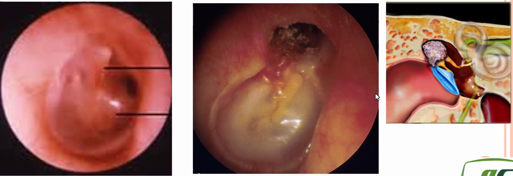
Presentation - Unilateral conductive hearing loss or blocked sensation often with otorrhea and a pearly white mass in the middle ear. - Ear pain due to impact or secondary infection - Sometimes also tinnitus, vertigo, facial palsy, or cranial nerve complication - Chronically discharging ear; treated by GP as otitis external and repeatedly given antibiotics.
Complications - Hearing loss - Cranial nerve palsies - Vertigo - Potentially life-threatening infections (e.g. brain abscesses, meningitis)
Management - Olive oil - Flushing - Micro-suction - CT and or surgical visualization to confirm diagnosis - Mastoidectomy and neurosurgery if intracranial abscess - Prevent infection and do frequent cleaning if surgery is not an option. - If there is cranial nerve facial palsy, this is an emergency, admit for decompression of the nerve.
Acute Otitis Media¶
Otitis Media is the infection of the middle ear. It can be classified into: - acute: < 3 weeks - subacute: 3 weeks to 3 months - chronic: > 3 months
Unlike older children and adults, young patients, particularly aged 6 - 18 months, are predisposed to AOM due to narrower and straighter eustachian tubes (Jaw grows forward). Additional risk factors include day care / school attendance, positive family history, and cigarette smoke exposure.
AOM often follows an upper respiratory infection, which causes inflammation and edema of the already narrow eustachian tube. Fluid accumulation in the distal tube allows for growth of colonized bacteria, most commonly Streptococcus pneumoniae, nontypeable Haemophilus influenza, and Moraxella catarrhalis.
Common presenting symptoms include otalgia, fever, and irritability. In addition, patients may have conductive hearing loss because fluid in the middle ear inhibits sound transmission.
The most specific finding in AOM is bulging tympanic membrane due to middle ear inflammation. Other classic findings include decreased TM mobility on pneumatic insufflation or visible air-fluid levels, both indicating middle ear effusion. A pale yellow, opaque TM with bulging is suggestive of purulent effusion. TM erythema is also common but is not required for diagnosis; as an isolated finding, TM erythema without bulging or effusion is insufficient for diagnosis.
- preceding URI
- fever
- otalgia
- hearing loss
- otorrhoea; the ear drum bursts due to high pressure from the pus. Prior to this the patient is feverish and in a lot of pain. ONce the ear drums burst, the fever settle and infection settle.
- head banging or ear pulling
Complication of acute mastoiditis is typically more common in children. Presents with ears turned downwards.
Evaluation - Tymapnogram - Pneumatic otoscopy is gold standard - Color: red / pink in acute, opaque /yellow/blue (OME) - Position: bulging, retracted - mobility: normal hypoobile - Assocaited pathology, perfs, cholesteatoma, retraction pockets - Consider NPC in asia!
Microbiology - Virus: RSV, Rhinovirus, Parainfluenza, Influenza - Bacteria: S.pneumoniae, H.influenzae, M.Catarrhalis - Infant: higher incidence of G-ve bacilli from regugitated food and milk; have wider, less angled, shorter eustachian tube for passing of these
Risk factors in children - Premaurities and low birth weight - young age - family history - day care - crowded lving conditions - low socioeconomic status - tobacco and polluant exposure - Medical conditions affect eustachian tube - Cleft palete - Craniofacial disorders e.g. treachers collins - Downs - Ciliary dysfunction - History of allergies - GERD - NG tubes, NT intubation, adenoids, malignancies, previous H&N irradiation induced scarring - Meical conditions affect immune conditions - AIDS - Steroids - Chem - IgG deficiency
Complications - Aural/intratemporal - Hearing loss, - OE - TM perforation - Retraction pockets - CSOM - Mastoiditis/petrositis/labyrinthitis - adhesive OM - tyampanosclerosis - ossicular dyscontinuity/fixation - facial paralysis (30% patient does not have facial nerve in bones, prognosis is good) - Intracranial - meningitis - extradural abscess - subdural empyema - focal encephalitis - brain abscess - lateral sinus thrombosis - otitic hydrocephalus
Management of AOM - Symptomatic, should settle in 2 - 3 days - Reduce smoke exposure, which is associated with increased incidence of recurrent AOM - Antibiotics (Amoxycillin - high resistance, Augmentin - Amoxicillin / Clavulanic acid, if penicillin-allergic use clindamycin or azithromycin) - <6 month - antibiotics - 6 - 2 yr - antibiotics if certain, or very sick and uncertain - more than 2 - only if severe - \pm oral or nasal decongestant - Complications -> ENT emergency - Severe pain -> myringotomy (puncture ear drum and release pus)
Prophylaxis for Recurrent Disease - Vaccination against the infection is the main prophylaxis - Grommet tube can be placed to enhance drainage - If recurrent after grommet tube falls out, can do adenoidectomy at the same time of inserting the second grommet tube
Acute Mastoiditis¶
Complication of EOM, presents as fever, ear pain, protrusion of the outer ear, and post auricular erythema and tenderness. Temporal CT scan may be indicated to confirm the diagnosis for atypical cases.
Management - ENT referral - IV Antibiotics - Imaging - \pm myringotomy and mastoidectomy
This febrile child with a bulging tympanic membrane, mastoid (eg, behind the ear) tenderness, and displacement of the external ear likely has acute mastoiditis, the most common suppurative complication of acute otitis media (AOM). The mastoid air cells are in continuity with the middle ear, allowing spread of the infection. In addition to the symptoms of fever and ear pain seen in AOM, infection of the mastoid causes erythema and tender swelling, which can result in outward and/or vertical displacement of the auricle. The tympanic membrane may show evidence of AOM (eg, erythema, bulging, perforation) or may not be visible due to swelling of the external auditory canal.
As with AOM, mastoiditis is most commonly seen in children age ≤2 and is commonly caused by Streptococcus pneumoniae, Streptococcus pyogenes, and Staphylococcus aureus. Pseudomonas aeruginosa has occasionally been implicated, especially in patients with recurrent infections or recent antibiotic use.
Acute mastoiditis can often be diagnosed clinically. Imaging (eg, CT scan, MRI) is indicated if the diagnosis is unclear, if there is suspicion for further complications (eg, meningitis, neurologic deficits), if the child appears toxic, or if the condition does not respond to initial treatment. Treatment of mastoiditis requires intravenous antibiotic therapy. Drainage of the purulent material is also required. This can be achieved by tympanostomy (± ear tube placement) or mastoidectomy.
Bullous Myringitis¶
An uncommon complication of AOM and presents with TM bullae.
Otitis Media with Effusion / Chronic Otitis Media¶
Middle ear fluid without tympanic membrane inflammation. It is distinguished from AOM by the lack of acute inflammation (e.g. fever, TM bulging). Young children, particularly age 6-24 months, are predisposed to fluid accumulation within the middle ear due to narrow, straight eustachian tubes that drain poorly. Most effusions develop in the setting of a viral infection or following an episode of AOM. OME is typically asymptomatic but may cause mild discomfort (e.g. ear tugging and pulling) due to pressure on TM. Because the effusion limits TM vibration, conductive hearing loss is also common. OME does not cause fever or severe ear pain.
Presentation Speech delay in children and hearing loss
Clinical features - may be asymptomatic - hearing loss - plugged and popping sensation - Poor TM mobility on pneumatic insufflation - Air fluid levels posterior to the TM; the effusion is nonpurulent - TM is NOT bulging or erythematous.
Management - Treat underlying cause - Conservative; resolves within weeks and does not require treatment. - Follow up and observe for resolution because chronic OME (>3 month) can results in speech delay and long-term hearing loss. - Antibiotics - short term benefit only - Surgical (myringotomy and ventilation tube insertion \pm adenoidectomy) in persistent, affecting speech/language, high-risk children who are already impaired or delayed in some way. - use grommet tube, last for 9 months to 10 months, and will drop spontaneously when it's done it's job; anterior inferior is the best part to put. Posterior superior is the worst! complications - Intraoperative: EAC injury, ossicular injury, dropped tube in middle ear (tell senior, crocodile retrieve, separate hole and insert, tell patient there is a tube in their middle ear, inert material no problem, offer a surgery to remove the tube, raise tympanonasal flap full exposure under GA) - Postoperative: infection, tube blockage, early extrusion, TM scarring, Persistent TM perforation
Chronic suppurative otitis media¶
Characterized by otorrhea and hearing loss for >6 weeks and TM perforation on examination. It can happen when inserted grommet drops and the hole do not heal.
Presentation - Quiescent: asymptomatic, reduced hearing - Active: otalgia, hearing problems
Management - Conservative: keep ears dry (problem if patient like water sport) - Surgery (tympanboplasty / myringoplasty): if patient prefer, or have recurrent infections
Barotrauma of the Middle Ear¶
Barotrauma can occur during flying or diving if the middle ear pressure does not equilibrate with atmospheric pressure during ascent/descent. Symptoms may include bleeding in the middle ear space (i.e. hemotympanum) or TM rupture.
Otosclerosis¶
Otosclerosis results from an imbalance of bone resorption and deposition that leads to stiffening and ultimately fixation of the stepes, which dampens the transmission of sound energy from the tympanic membrane to the cochlea.
It is inherited in an autosomal dominant pattern with incomplete penetrance. It tends to occur in younger Caucasian patients and is more common in women. Otosclerosis may progress during pregnancy.
Presentation Progressive conductive hearing loss
Additional Clinical Features - Paradoxical improvement in speed discrimination in noisy environment (feature of conductive hearing loss). This is called oaracusis of Willis, possibly because CHL dampens the competing background noise, thereby allowing speech to be heard more clearly. - Reddish hue behind tympanic membrane; ear examination is generally unremarkable, although excessive bony resorption can expose underlying blood vessels, leading to a reddish hue sometimes seen behind the tympanic membrane.
Diagnosis - Audiogram - Tympanogram - Kahat's notch: oscillators enter the bone - Osseous route A is the only route for sound vibrations to reach the inner ear, when there is a middle ear conductive defect, routes B and C are materially dimiished in magnitude - CT of temporal bone - Ice-cream cone - Anterior to stappes footplate is the first place of fixation - Radiolucent plaque at the head of cochlear
Management - Hearing amplification using hearing aids - Surgical reconstruction of the stapes, stapedectomy - Facial nerve - Chorda tympani - Potential continued hearing deterioration. - Post-op tinnitus and gidiness.
Eustachian tube dysfunction¶
Eustachian tubes connect the middle ear to nasopharynx. Through physiologic opening and closing, they equalize middle ear pressure, drain middle ears, and prevent reflux of nasopharyngeal secretions into the middle ear. Inflammation due to infection, allergies, environmental irritation (cigarette smoke) can result in tube obstruction, leading to dysregulation and lack of middle ear ventilation.
Clinical features - Ear fullness/discomfort - Tinnitus - Asymmetric conductive hearing loss (muffled hearing) - Popping sensation (particularly during changes in pressure e.g. yawning and swallowing) - Retracted TM due to negative middle ear pressure, dilated blood vessels around TM due to inflammation
Diagnosis Clinical
Complications - Permanent hearing loss - TM rupture - Cholesteatoma
Management - Treat underlying cause (e.g. antibiotics for acute bacterial rhinosinusitis, antihistamine for allergic rhinitis)
Cochlear Conditions¶
Bilirubin can induce hearing loss Taking history in children - how are they coping in school? - falling behind in grades - developmental milestones - antenatal history is very important
Congenital cytomegalovirus infection related SNHL¶
Most common cause of nonhereditary SNHL in children. SNHL results from damage to the inner ear or auditory nerve. Congential CMV is transmitted transplacentally from the mother to fetus in utero. Although some infants are born with features of CMV (e.g. small for gestational age, microphephaly, jaundice, hepatosplenomegaly), most infants are asymptomatic. Hearing loss occurs in up to 50% of symptomatic and 15% of asymptomatic patients; it may be present at birth and progress, or its onset may be delayed until childhood. One or both ears may be affected.
Diagnosis Diagnosis typically involves CMV PCR testing of the urine or saliva.
Management Symptomatic infants are treated with antivirals to prevent progresive hearing loss. Treatment is not recommended for asymptomatic individuals with isolated SNHL.
Drug-induced Ototoxicity¶
Ototoxic medications may cause damage to multiple structures of the cochlea, resulting in bilateral SNHL that may be irreversible, beginning in the high frequencies, which may compound age-related hearing loss. Some of the most notable ototoxic medications (based on incidence of ototoxicity and frequency of use) are - aminoglycoside antibiotics - chemotherapeutic agents e.g. cisplatin - high-dose salicylates - loop diuretics e.g. furosemide; higher risk in renal failure patients
Presentation bilateral SNHL esp in high frequencies
Clinical feature - Also has tinnitus and balance difficulties
Management - Formal audiogram - Cease the offending medication if possible
Presbycusis¶
An aging condition affecting >50% adults by age 75, and is likely related to cochlear hair cell loss and cochlear neuron degeneration. Age-related brain atrophy also likely contributes (likely due to increased information processing times) and may explain the disproportionate problems with speech discrimination in older compared with younger patients with SNHL.
Presention - Social withdrawal in elderly - Trouble understanding speech when there is competing background noise. - Tinitus often develops and is typically described as continuous ringing, rushing, or buzzing.
Additional Clinical Feature - High frequencies are affected first, making it more difficult for patients to understand higher-pitched voices (e.g. woman, children). - Hear better in one-to-one conversations in quiet room, however, even a small amount of competing noise impairs hearing (e.g. speech discrimination)
Management - Patient and patient family education - Limit background noise - Families should be counseled to look directly at patient when speaking to them - Amplification (e.g. hearing aids) may be beneficial
Meniere's Disease¶
Increased endolymphatic fluid volume or pressure in the vestibular system i.e. endolymph hydrops.
Presentation - Episodic vertigo lasting 20 min to 24 hrs - asymmetric sensorineural hearing loss that fluctuates and varies in severity, usually worsening over time; this primarily affects low frequencies at first and then progress to permanent loss over all frequencies - low frequency tinnitus in affected ear, often accompanied by a feeling of fullness - Lack specific identifiable triggers.
Management - Conservative e.g. salt restriction, diuretics, vasodilators, labyrinthine sedative e,.g. Stemetil, Stugerone; more than ⅔ patients symptoms resolve on it's own. - Patient education on vertigo - Surgery - Destructive: vestibular nerve section, labyrinthectomy, gentamicin infusion of the middle ear - Reconstructive surgery: steroid infusion of the middle ear, endolymphatic sac surgery - Others: Meniert's pump - Advances: vestibular implant
Perilymphatic Fistula¶
Inner ear contains endolymphatic fluid-filled semicircular canals (which convey movement and position of the head) and the cochlea (which is the sensory organ of hearing). Conditions that cause disruption of the endolymph flow can present with vertigo (semicircular canels) and/or sensorineural hearing loss (cochlea). Typically this is a complication of head injury or barotrauma.
Presentation Perilymphatic fistulas are a rare, but debilitating complication of head injury or barotrauma. They cause leakage of endolymph from the semicircular canals and cochlea into surrounding tissues, resulting in characteristic clinical features that can be triggered by sneezing, straining, or sudden loud noise.
- cause damage to cochlear hair cells from loss of endolymph: progressive sensorineural hearing loss, tinnitus
- pressure changes in the inner near (e.g. Valsalva maneuver, elevation changes, sudden loud sounds) due to acutely increased endolymph leakage: episodic vertigo with nystagmus, vertigo
Diagnosis - Perfoming a loud clap near the patient's ear and observe for nystagmus (Tullio phenomenon)
Management - Advise patients to limit activities that increase inner ear pressure - Refer to ENT for further management
Acoustic Neuroma¶
Vestibular Conditions¶
Benign Proxysmal Positional Vertigo¶
Otoconia (also known as “otoliths” or “canaliths”) dislodge and settle within the endolymph of the semicircular canals. When the head remains static, there is no stimulus causing the hair cells to fire. With motion, however, the displaced otoconia shift within the fluid, and the subsequent stimulus is unbalanced with respect to the opposite ear, inappropriately causing symptoms of dizziness, spinning, and/or swaying. Hence, symptoms of BPPV are profound with movement but classically lessen with rest. Patients typically have sudden, brief (<1 min) episodes of vertigo triggered by head movement. The displaced otoliths most likely settle in the posterior canals, following by lateral canal, and then rarely, superior canal.
Presentation: Vertigo
Clinical Features - Recurrent, suddent, brief vertiginous spells - Exacerbated by head movements and relieved with rest - Nystagmus that is undirectional and fatigable - Posterior canal: upward beating - Lateral canal: horizonal beating - Superior canal: downward beating - Due to age-related degeneration of the otolithic membrane, BPPV frequently occurs in the elderly population
Diagnosis: Clinical
Evaluation - BPPV is largely a clinical diagnosis, and often the battery of laboratory and imaging tests ordered only help rule-out other possibilities. It is critical to differentiate vestibular versus central, potentially life-threatening, processes. - As above, obtaining a good history and performing a thorough neurological exam is imperative. - Laboratory studies are not found to be helpful. - Imaging of the head in BPPV is unremarkable. - Head CT and MRI are useful to rule-out infarct, hemorrhage, masses/tumors, or other pathology that would suggest alternative causes of vertigo. - The Dix-Hallpike, if it can be tolerated, should be performed as a provocative test to observe for expected changes in symptoms and to localize which inner ear is involved. It diagnoses posterior canal BPPV as well as contralateral anterior (superior) canal BPPV; Variant of Dix-Hallpike can be used to treat anterior canal BPPV - sensitivity of 79% and specificity of 75% - The Dix-Hallpike helps localize the affected ear by exacerbating both symptoms and clinical signs such as nystagmus. - With BPPV, there is a latency period of 30 seconds or less between provocative head movement and onset of nystagmus. - Positive if patient experience vertigo and latent, fatiguable, upward nystagmus - Repeat on the other side - Contraindications: neck trauma, cervical spondylosis 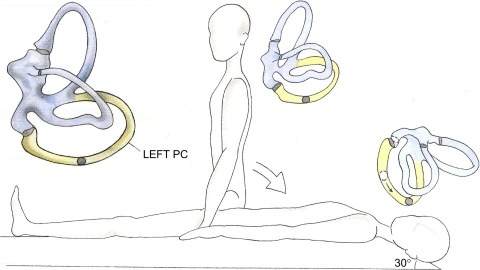 - Head impulse test
Management - Maneuveurs can be performed to help coercing the crystals back into the utricle (macula) and removing the disturbance from the otolithic membrane. - Epley maneuver for posterior canal otholith 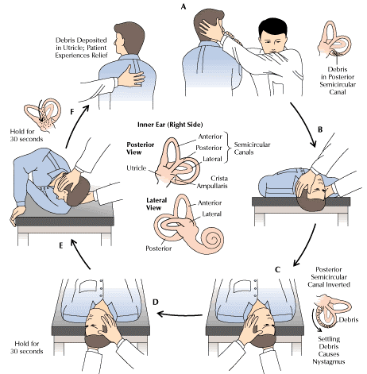
-
contraindicated in cervical spine injury/abnormality, such as possible atlantoaxial subluxation, as well as in patients with possible carotid or vertebral artery dissectio
-
Log Roll for Lateral Canal otholith
- The "log roll" exercises, are a procedure where an individual is rolled in steps of 90 deg, starting supine/affected ear down, to supine, to affected ear up, to nose-down, and then to sitting at intervals of 30 seconds or one minute.
- There is a report of 75% efficacy (15/20)
- This procedure is performed once or twice in the clinic and repeated at home for 7 days. It seems to us that the difficulty of establishing which is the "bad" ear is an obvious drawback of almost any lateral canal treatment and in some situations, we do the log roll to one side for a week, and follow with the log roll to the other side for another week.
- We also feel that it is preferable to begin with the bad-ear down rather than supine, for situations where there is debris close to the ampula (i.e ageotrophic). Vibration of the mastoid might theoretically add to efficacy of this procedure but no studies are available at the present writing.
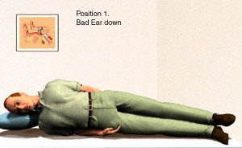 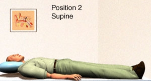 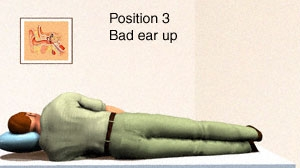 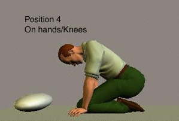
-
Maneuvers for superior canal otoliths
-
Rahko (2002) suggested a maneuver as illustrated above. Start with the head 45 deg down, then move to 45 up (supine) accomplishing a 180 degree "flip". This geometry resembles the Semont maneuver where again, a 180 degree flip is used (i.e. B to C). Rahko reported success in 53/57 patients, although without any controls. We would call position B the "head looking under the table" position. Because the head is flexed rather than extended, it is perhaps more easily possible to attain a head position closer to pointing 90 degrees down (i.e. head flexed 90 degrees from prone, looking under table), than with maneuvers that depend on head-extension (such as the Kim and Yacovino maneuvers discussed in the following). One would think that the Rahko maneuver could be simplified by just going from B (the first position of reverse Semont) to C (the second position of reverse Semont), and just leave out A and D. 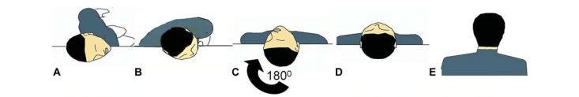
-
Deep head hanging treatment for AC BPPV as proposed by Yacovino, Hain and Gualtieri. (2009). This treatment differs from that of Kim (above) in that the head is not turned to either side, and it is positioned so that it is further back with respect to horizontal in position 2.
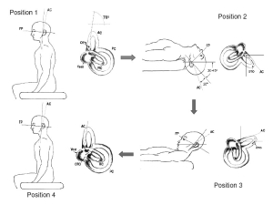
-
Vertebrobasilar insufficiency¶
Presentation Imbalance A/w diplopia, perioral numbess, dysarthria, and ataxia
Vestibular Migraine¶
Causes vertigo that is variable in severity, typically lasts several minutes to a few hours, and is usually associated with headache or other migrainous phenomena (e.g. photophobia).
Vestibular Neuritis¶
A self-limiting disorder of the vestibulocochlear nerve that sometimes follows a viral URTI. It can be associated with significant nausea and vomiting as well as impaired gait, with the patient falling toward the affected side. VN associated with unilateral hearing loss is termed labyrinthitis.
Presentation Acute persistent vertigo
Clinical Feature
- Significant nausea and vomiting
- Tuning fork: BC > AC
- BC is picked up by the other ear; false negative Rinne
- To counter this, mask the sound to get the true Rinne's result
- Nystagmus that is suppressed when they direct their vision toward a stationary target (consistent with peripheral rather than central vertigo)
- In Head Trust Test, patient is asked to look at a fixed target while the head is rapidly rotated. Patients with normal estibular function maintain visual fixation, however, in patients with VN the eyes move away and then return to the target with a horizontal saccade. Catch up saccade to the right means right side vestibular weakness
Diagnosis
- Clinical
- Audiogram
- Profound hearing loss
- Machine is producing sound at it's limit
- MRI temporal bone (in all unilateral SNHL)
- To rule out acoustic neuroma, 10 - 30 % will present with acute hearing loss
- Acoustic neuroma
- Facial numbness due to compression of trigerminal nerve
- Patient compensate for gidiness
Management
- Expectant (30 - 60 % will have improvement)
- May consider symptomatic relief with vestibular suppressants e.g. meclizine (antihistamine), intravesticular corticosteroids, acyclovir (within 2 weeks), and vestibular rehabilitation.
Vestibular Schwannoma¶
This is a benign tumor of CN VIII Schwann cells that forms in the internal auditory canal. CN VIII is comprised of both cochlear and vestibular nerves. Vertigo may not happen because of the tumor's slow growth allows for central compensation of gradual unilateral loss of input. Median age of patients is 50. Usually unilateral unless patient has neurofibromatosis type 2, in which case bilateral tumor may be seen.
Presentation CN VIII invasion: Asymmetric sensorineural hearing loss and imbalance CN V and VII compression when tumpr expands from the internal auditory canal into the cerebellopontine angle: facial numbness and or paralysis
Diagnosis
- Audiogram
- MRI with contrast of internal auditory canal
Management
- Observation in selected patients (e.g. small tumors, minimal symptoms, older or infirm patients)
- Surgery
- Radiation therapy
Facial Conditions¶
Facial Nerve Palsy¶
Voluntary facial movement is initiated by the motor cortex (located in the frontal lobe), which delivers input to the facial nerve (cranial nerve [CN] VII), a peripheral nerve that innervates the muscles of facial expression. The facial nerve nuclei that innervate the lower face only receive input from the contralateral motor cortex; however, the nuclei that innervate the upper face receive input from bilateral motor cortices. Therefore, central or peripheral lesions can often be distinguished by assessing movement in the upper face.
- Central nerve lesions (eg, stroke, tumor) typically affect the motor cortex or the descending tracts unilaterally; this results in contralateral lower face weakness. However, the upper facial muscles (eg, forehead, brow) are spared due to compensation from the unaffected hemisphere.
- Peripheral nerve lesions (eg, Bell palsy) affect the entire facial nerve. This results in unilateral weakness of the entire half of the face; forehead movement is lost.
The most common cause of rapid-onset unilateral upper and lower facial weakness is Bell palsy, an acute peripheral neuropathy of CN VII. Common findings include an inability to raise the eyebrow or close the eye, drooping of the mouth corner (with the mouth drawn to the unaffected side), and disappearance of the nasolabial fold. For most patients, partial or complete recovery occurs within 3-4 months.
The upper face receives input from bilateral motor cortices. Lesions in the central nervous system typically cause unilateral lower facial weakness that spares the forehead whereas peripheral lesions (eg, Bell palsy) cause weakness that affects the entire side of the face. Bell palsy may also result in decreased eye lacrimation, hyperacusis, and reduced taste sensation over the anterior tongue.
Bell's Palsy¶
ACUTE LMN facial nerve palsy of unknown cause. Possible viral aetiology (e.g. HSV1, EBV, CMV, adenovirus, rubella, mumps, influenza, coxsackie virus), with reactivation of HSV1 being the leading cause. Inflammation of the nerve, lead to edema within bony canal. Recurrent Bell's palsy (4 - 14%).
Prognosis More than 80% recover, 20% don't recover fully
Evaluation
- Rule out other causes of LMN 7th nerve palsy: ear, parotid
- Do head and neck exam
- Look for signs of cancer and growth
- Hearing loss test
- Chosteotoma etc
- Parotid palpation
- Check upper neck
Grade the Bell's Palsy
- House Brackmann

- Sunnybrook Facial Grading system
Management of Bell's Palsy
- Acyclovia 800 mg 5x/day x 1/52 if normal Bell's Palsy (within 2 weeks of onset)
- Valacyclovia is better for Ramsay Hunt Syndrome (within 2 weeks of onset)
- Prednisolone 1mg/kg/day + omeprazole (for stomach protection) if no contraindication to steroid; for 1 week
- Eye protection: tape eye when sleeping, lubricant eye drops; may refer to opthalmologist
- Facial exercises / rehabilitation to maintain facial tone for higher success rate of facial reanimation surgery
Melkelsson Rosenthal Syndrome¶
Also get tongue / labial edema
Ramsay Hunt Syndrome¶
Aka herpes zoster oticus, this condition is caused by the reactivation of varicella zoster virus from the geniculate ganglion, disrupting motor fibers of cranial nerve VII with subsequent spread to cranial nerve VIII (vestibulocochlear nerve). In addition to the painful shingles rash, Ramsay Hunt syndrome can cause facial paralysis and hearing loss in the affected ear. Patients have facial nerve palsy. Neurosensory hearing lost. Much poorer prognosis.
Clinical Feature The two defining manifestations are
- painful erythematous vesicular rash on the auditory canal or auricle
- ipsilateral facial paralysis
Many patients also develop vestibular (e.g. vertigo, nausea/vomiting), hearing, and taste disturbances, but systemic symptoms such as fever are rare (<20%).
Management Treatment with anti-viral medication (e.g. valacyclovir) may speed resolution and limit adverse outcomes. However, many patients are left with residual facial muscle weakness or paralysis.
Facial Schwannoma¶
- Benign tumor, Rare incidence 0.8%, most common tumor of the VII nerve
- Can involve intracranial, intratemporal, or extratemporal segments
- Tumor location: geniculate ganglion, labyrinthine and tympanic segments most commonly reported
- Clinical presentation: progressive facial weakness, hearing loss, tinnitus, facial tic, imbalance/vertigo, headache, otalgia,
Management
- Consider the degree of facial weakness and size
- House Brackman grade III is the best outcome after surgery
- Observe beforehand and then remove after the palsy becomes worse
- Discuss with facial surgeons to consider grafting
Maxillofacial vascular malformation¶
Traumatic Facial Nerve Injury¶
- iatrogenic
Temporal bone fracture¶
- Battle sign
- Otic capsule sparing vs otic capsule violating
- Facial nerve injury more common in transverse and otic capsule-violating ractures
- most common site of injury to facial nerve: geniculate, proximal tympanic segment
Evaluation
- ask for h/o DM, trauma, ear infections or generalized weakness
- determine
Management
- Immediate complete facial nerve palsy - role for surgical decompression
- Delayed-onset partial/complete facial nerve palsy - generally good prognosis, almost all will recover with conservative management
- in ER document facial nerve palsy before patient loss consciousness
Parotid Gland Neoplasm¶
Most tumors that originate in the parotid gland are benign (>80%) rather than malignant. But exposure to radiation is a significant risk factor for malignant disease. Both the facial nerve (CN VII) and the trigeminal nerve (CN V) are closely associated with the parotid gland. The presence of facial droop (CN VII dysfunction) or facial numbness (CN V dysfunction) is very concerning for neural invasion due to malignant disease.
As a result, all patients with parotid masses undergo detailed cranial nerve examination. Imaging (CT or MRI) is typically performed. Ultrasound is often used to enable fine-needle aspiration biopsy. Parotid tumors represent a diverse range of pathologies, including primary parotid neoplasms, lymphomas, or metastases (eg, squamous cell carcinoma, melanoma). Surgical resection with sparing of the facial nerve is typically recommended, with possible additional surgery or adjuvant treatment depending on the final histopathologic diagnosis.
Nasal Cavity and Sinus Conditions¶
Choanal Atresia¶
Congential anomaly that may occur in isolation or as a part of the CHARGE syndrome (coloboma - missing eye tissue, heart defect, atresia choanae, growth retardation, genital abnormalities, and ear abnormalities).
Presentation - Unilateral (most common): chronic nasal discharge, symptomatic during childhood - Bilateral: - intermittent cyanosis in newborn that worsens with feeding and improves with crying (newnates are obligate nasal breathers) - noisy breathing (stertor) - Symptomatic shortly after birth
Diagnosis - inbility to pass a catheter through the nares into the orophargynx - CT scan or nasal endoscopy to confirm
Management - Short-term airway maintainence(e.g. oral airway, intubation, surgical airway) - Corrective surgery - Orogastric tube feedings until corrective surgery
Nasal Foreign Body¶
The diagnosis is usually straightforward. However, insertion of nasal foreign body is unobserved by caregiver 25% of cases. In these patients, the retained object can induce inflammation (e.g. nasal turbinate erythema) or become infected, leading to unilateral purulent discharge. Patients may also have sneezing and epistaxis.
Clinical Features - inorganic substance: asymptomatic, mild pain/discomfort - organic substance: unilateral, foul-smelling, purulent discharge - button battery: epistaxis, purulent discharge
Complications - local irritation - nasal septal perforation (with button battery or multiple magnet insertion) - infection (e.g. sinusitis) - aspiration into airway
Management - positive pressure (e.g. patient exhalation with unaffected nare occluded) - mechanical extraction
Pyogenic Granulomas¶
Benign vascular tumors that occur on the nasal septum and cause congestion. However, bleeding is typically prominent because they are very friable.
Nasal Furunculosis¶
Nasal furunculosis is a localized infection of the hair-bearing nasal vestibule. It is usually caused by the bacteria S aureus. It can occur as a primary infection or secondary to chronic rhinorrhea, upper respiratory infections, and nose picking. It is potentially life threatening as it can spread to the cavernous sinus. Patients complain of pain, tenderness and erythema in the nasal vestibule.
Epistaxsis¶
Primarily a pediatric condition. Most of the bleeding is from the Little's area or Kisselbach's Plexus, the anterior part of nasal septum, and easily subjected to trauma. This is the area of anastomosis of several arteries.
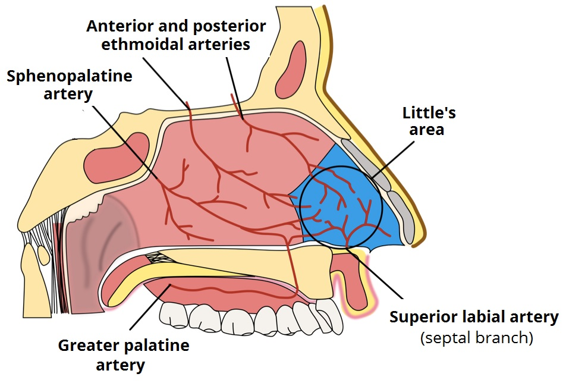
Reasons for epistaxis can be: - Spontaneous (90% - not serious) - typically due to crusts formation on the Little's area secondary to inhalation of dry air (e.g. in AC room) - People pick their nose and the Little's area is in the anterior portion of the nasal septum - Allergic rhinitis - Sinusitis - Little's area bleed - Vascular lesions - haemangioma - excision under GA, rare - angiofibroma - Lobular Capillary hemangioma - Carotid Artery Rupture: A side effect of ChemoRT for NPC - osteoradionecrosis to expose carotid artery or to result in an aneurysm of the carotid artery subjecting to blow out. - Blood dyscrasias - Hereditary hemorrhagic telangiectasia (HHT), also known as Osler–Weber–Rendu disease and Osler–Weber–Rendu syndrome, is a rare autosomal dominant genetic disorder that leads to abnormal blood vessel formation in the skin, mucous membranes, and often in organs such as the lungs, liver, and brain. Curucao criteria is used for diagnosis. - Trauma - Tumors - Primary NPC - Radiation induced cancer after NPC treatment - Cocaine may result in nasal septum necrosis and hence nose bleeds
Important Questions for History - Determine the site: - Unilateral or bilateral: unilateral is more serious, may be able to find a cause - Anterior or posterior: most of the blood comes from the front of the nose or back of the throat - Severity of bleeding: - Duration - Quantity of bleeding - Any precipitating factors: trauma, infection, running nose - Any past medical history: atopy, bleeding tendency - Any drug history: anti-coagulants, anti-platelets, cocaine
Physical Examination - Look into the nose, do anterior rhinoscopy (can see the inferior turbinate and nasal septum, sometimes middle turbinate) - Look into oral cavity, looking for blood in oropharynx - Look at the neck to look for NPC - Nasoendoscopy after adequate decongestion
Management - ABCs, vitals, IV fluid, blood works (CBC, group and type, PT/PTT) - A complete blood count needs to be ordered in the case of severe epistaxis that may require transfusion. - Coagulation studies are order in patients who are anticoagulated or have recurrent spontaneous epistaxis. - Control BP and correct abnormal results (high BP contribute to epistaxis) - First aid: - Pinch nose at the cartilagious region for about 10 minutes (or count slowly to 100). Most of the time this is enough and does not need to be cauterized. - Cold pack on the forehead to reduce blood supply - Suck ice chips for vasoconstriction - Loosing constrictive things around the neck - Lean forward helps drain the blood from the nose and keeps it from the esophagus. - When First Aid does not help - Chemical cautery using silver nitrate can also be used. - How it is done - Anesthesize the area first - Ensure good light source to visualize the area - Nasal speculum to open the nose - Precautions - Avoid cautery on both sides simultaneously - Warn patients of increased discharge and pain - Have swabs / cotton sitcks ready to soak up mucus and excess solver nitrate - Good for minor bleeding because more extensive blood flow will clear out the silver nitrate before it can induce coagulation. - Has a 80% or higher initial success rate. - Oxymetazoline, a topical vasoconstrictor, can be applied if direct compression alone is not effective. However, oxymetazoline cannot be used for more than 3 days due to rebound nasal congestion. It can be paired with chemical cautery - More severe epistaxis, do electrocautery embolization - If Cautery Fails - Anterior packing - 10 cm Merocel, polyvinyl alcohol sponges - Coat with tetracycline ointment or lubricating gel - Shove it in, aiming DOWNWARDS along the floor of the nasal cavity - Pack the side that is bleeding first, then pack other side if bleeding persists - Can pack up to 2 Merocels in each side - Leave this in for 48 - 72 hours - Posterior Packing - Remove Merocel pack if anterior packing has been performed - Foley catheter may be used - Only used when anterior nasal packing cannot stop the bleeding e.g. bleeding from splenopalatine region - These can be uncomfortable for patients because they can be difficult to place and remove and typically are left in place for up to 5 days to confirm clot formation. Furthermore, these patients require oral antibiotic treatment to prevent toxic shock syndrome. Other known adverse effects of nasal packing include septal hematomas and abscesses, rhinosinusitis, septal perforation, necrosis, and even syncope. - Absorbable products, such as collagen foam (Gelfoam®), oxidized cellulose sheeting (Surgicel®), or gelatin-thrombin (FloSeal®), tend to be better tolerated by patients owing to ease of administration and the lack of need to remove packing at a later date. Several prospective studies have demonstrated that use of gelatin-thrombin resulted in initial control rates for anterior epistaxis above 80%. These products tend to be costlier than nondegradable packing, but these costs may be offset by the cost of follow-up visits and packing removal.
Question - How to achieve nasal decongestion in preparation for nasoendoscopy? Cophenylcaine spray, to anesthesize the nose and to decongest the nose.
Recurrent Epistaxis 2/2 CPAP¶
Continuous positive airway pressure predisposes users to recurrent epistaxis because of its drying effect on the nasal mucosa. After beginning CPAP, many patients develop new nasal symptoms, including dryness, obstruction, and epistaxis due to mucosal damage caused by cold, dry pressurized air. On examination, the nasal mucosa appears dry and erythematous with significant crusting.
Humidification and warming of the air through the CPAP machine are often effective in preventing CPAP-associated epistaxis. Nasal saline irrigation is recommended to moisturize the nasal mucosa and assist with clearing of dry secretions. Patients may also apply a lubricating jelly (e.g. saline gel, petroleum) to the anterior septum. However, improvement in nasal symptoms does not appear to increase compliance to CPAP therapy.
Nasal Bone Fracture¶
Common injury, that accounts for 40% facial fracture. It is common because it is a thin bone.
Presentation Nasal pain and epistaxis
History - Main complaint: on-going problems of pain, nasal blockage, bleeding - Mechanism of injury - Signs of other injury: nasal blockage, epistaxis, visual disturbances, clear rhinorrhea, other facial injuries - Previous Medical History: bleeding tendency, things that can affect healing
Physical - Any deviation - External nasal deformity - cosmetic - Bruising - Raccoon eye, Battle sign - EOM, visual screen for diplopia /RAPD - Palpation for steps or deformities - Ask for previous photo - Jaw movement / distraction of maxilla / mandible - Septal hematoma
Management - Isolated fractures - cosmetic deformity? need for x-rays? - If no cosmetic deformity or if the patient is not bothered by it, one can manage conservatively. - x-ray (especially Water's view) help to confirm nasal bone fracture is mostly for medical-legal reasons - Conservative vs M&R (manipulation and reduction) - M&R should be done within 14 days of injury - Need to exclude associated and more serious fractures and injuries
Septal Hematoma¶
Patient with nasal trauma and nasal obstruction with fluctuant swelling of the nasal septum has a septal hematoma, which is an accumulation of blood between the perichondrium and septal cartilage.
Althought the incidence is rare, the complications of an untreated septal hematoma are significant. - Infection can develop rapidly (2-3 days) leving to a septal abscess. - In addition, because the septal cartilage has no direct blood supply and receives all nutrients via diffision from the perichondrium, a septal hematoma can cause avascular necrosis of the septal cartilate. Destruction of the nasal septal cartilage can result in septal perforations, external nasal deformities (e.g. saddle nose), or internal nasal valve collapse (i.e. nasal obstrction).
Clinical Feature - All patients who sustain nasal trauma undergo examination of the nasal septum. - Palpation can differentiate between a deviated nasal septum (firm) and a hematoma (fluctant and soft).
Management - Patients with a septal hematoma require prompt incision and drainage. - After incision and drainage, anterior nasal packing should be placed to compress the perichondrium to the nasal septum; - Ice packs and NSAIDs can reduce edema due to inflammation. - Patients are treated with antibiotics and require otolargynology evaluation after a few days for packing removal and evaluation.
Rhinoplasty complications¶
Complications are common following rhinoplasty, 1 in 4 may need revision. Common complications include patient dissatisfaction, nasal obstruction, and epistaxis. Those that involve the nasal septum are less common but more serious. The septum is made up of cartilage and has poor blood supply contrasting sharply with the rich anastomosing blood supply of the nasal sidewall. The underlying cartige relies completely on overlying mucosa for nourishment by diffusion. Because of the poor regenerating capacity of the septal cartilage, trauma, or surgery on the septum may result in septal perforation. The tyupical post-op presentation is a whistling noise heard during respiration. Following nasal surgery, septal perforation is typically the result of a septal hematoma though a septal abscess may also be the cause. Additional conditions that can cause septal perforation are self-inflicted trauma (nose picking), syphilis, tuberculosis, intranasal cocaine use, sarcoidosis, and granulomatosis with polyangitis (Wegner's).
Nasal Polyposis¶
Recurrent bacterial sinusitis may result in nasal polyposis. This may manifest with nasal congestio and thick rhinorrhea. Recurrent sinusitis is not typically assoiciated with NPC.
Clinical Feature - Anosmia resulting in bland-tasting food - Recurrent nasal discharge / congestion - Bilateral gray glistening mucoid masses
Cerebrospinal Fluid Rhinorrhea¶
Usually due to accidental trauma (especially to skull base), but can also be due to surgical trauma (e.g. sinus surgery) or non-traumatic events (e.g. elevated intracranal pressure).
Presentation - persistent unilateral rhinorrhea with salty or metalic taste - meningitis if complicated
Evaluation - When suspected, pack ear and arrange for scan! Imaging (with intrathecal contrast) - Test for CSF specific proteins (beta-2 transferrin, beta-trace protein) - Endoscopy (\pm intrathecal fluorescein dye)
Prognosis - At risk for meningitis due to nasal flora comtamination of the CSF
Management - Bed Rest, head of bed elevation, avoidance of straining - Lumbar drain placement - Surgical repair
Allergic Rhinitis¶
AR is inflammatory response of the mucosal lining of the nose to an allergen. Must be IgE mediated repsonse characterized by nasal congestion, rhinorrohea and / or nasal itching.
Caution - If patient have unilateral symptoms, this is a red flag and is NOT allergic rhinitis, patients need to be referred to ENT specialist for further management - Tumor - CSF rhinorhea - Never forget to look into the ears; some patients may have hearing loss due to chronic otitis media secondary to the allergy, or adneoid hypertrophy affecting the ear
Classification
Pattern of exposure to triggering allergen - Seasonal: at the same time of the year - Perennial: persistent throughout the year - Episodic: say to pets
Frequency of symptoms - <4 days a week or <4 weeks a year: intermittent - >4 days a week AND >4 weeks a year: persistent
Severity of symptoms - Mild if does not interfere with QOL - Normal sleep - No impairement of daily activities, sport, leisure - Normal work and school - Severe if does not interfere with QOL
These are the descriptors used to communicate the condition.
Presentation - Early phase: sneeze and itch, bilateral rhinorrhoea and mucosal edema - Late phase response: chronic nasal obstruction - Tell tale signs: allergic salute, allergic shiners
Additional Clinical Features - Personal and family history of atopy - Pale or bluish, boggy, edematous turbinates - A/w sneezing, itching, and watery eyes
Complication - Hypertrophic nasal turbinate
Investigations - Skin prick test - Lift upper layers of skin with sharp needle and release - Drop antigen extract - Read in 20 min - Results 0 -4+; more than 7 mm is significant - Compare with negative (saline) and positive (hitamine) control - Safe fast and reliable - Affected by antihistamines (skin wheal reaction); need to stop antihistamine for a week before the test - Disadvantages: subjective, false positives, qualitative - Intradermal dilutional testing / serial endpoint dilution - Intradermal injections - Serially increased concentrations as test progresses - Only use before starting immunotherapy - RAST (radioallergosorbent test) / in vitro testing - Total IgE and - Allergen specific serum IgE quantification - Advantages - QUantifiable and ob jective - Disadvantage - Cost - otential poor correlation with in vivo allergic symptoms - Indications: children, skin problem, can't stop anti-histamine
Management - Allergen avoidance: Education, education, education - Dust mites / mold/ pet dander: <50% humdity, wash linen in hot water, remove carpets, hypoallergenic coverings (insufficient efficacy for effectiveness), air purifiers, avoid pets in bedroom - www.allergypartners.com: a booklet on environmental control in allergic rhinitis - Pharmacotherapy - Antihistamines: - competitive inhibition of H1 receptors - treat early phase reaction symptoms like sneezing itch and rhinorrhea but has little effect on late phase symptoms like congestion - 1st generation: chlorpheniramine / hydroxyzine (atarax) / diphenhydramine (benadryl): sedating due to effect on CNS H1 receptorsand anticholinergic side effects like dry mouth - 2nd gen: loratidine, desloratadine, cetirizine: less sedating and less anticholinergic effect - Intranasal steroids - Most effective but takes 1 -2 weeks - Relieves nasal congestion - Little systemic absorption - No HPA axis suppression - Local side effects: dryness and epistaxis - Need to use it while bending downwards 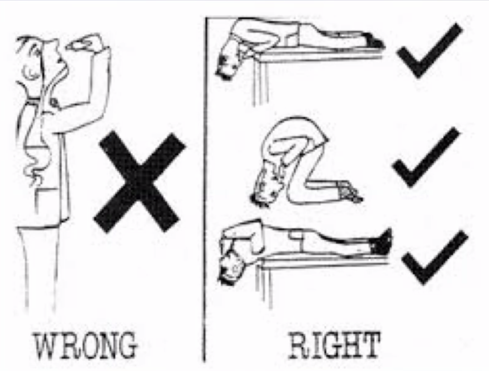 - Oral steroid should be avoided, unless absolutely necessary in some patients - Never use more than 5 - 10 days - Interim for intranasal steroid to start working in patients who hope to have immediately relief - Topical decongestants e.g. oxymetazoline - Block alpha receptors in nasal musocsa - Rebound phenomenon (Rhinitis medicamentosa): we can't do much, sometimes have to give them heavy doses of steroids - Systemic decongestants - Pseudoephedrine (CNS side effect -> sitmulant); contraindicated in patients with HTN, results in insomnia; a lot of OTC has this, be aware. - Phenylpropanolamine - Anticholinergics - Ipratropium bromide intranasal (rhinorrhea) - Mast cell stabilizers (if patients have concurent asthma) - Intranasal cromlyn sodium - Leukotriene inhibitors (if patients have concurent asthma) - Montelukast - Immunotherapy - Less than 5% of Dr Seth's patients - Allergic shots are used - Rationale of IT - Repeated exposure to the immune system - Facilitates minimizing of immune response - Large doses of antigen administered parenterally suppress IgE formation - Stimulates formation of allergen specific IgG blocking antibodies - Compete for IgE target sites - Decreased response - Indications - Failed pharmacotherapy - Prolonged pharmacotherapy: inability to wean off - Allergen avoidance not possible - Prerequisites - Proven IgE mediated atopic disease - Positive SPT or serum specific IgE that correlates with rhinitis symptoms - Contraindications: unreliable patient - Advantage: potentially curative - 80 - 90% able to discontinue therapy after 3 -5 years - Disadvantages: cost, time consuming - Sublingual immunotherapy is available as an alternative to subcutaneous immunotherapy - RARELY surgery: only if chronic nasal obstruction despite medical therapy
Nasal corticosteroids are the most effective medications for patients with allergic rhinitis. In one systematic review (1998), nasal corticosteroids improved symptoms of nasal blockage, nasal discharge, sneezing, nasal itch and post nasal drip compared to antihistamines. More recent reviews (2012 and 2017) confirm these findings and also recommend nasal corticosteroids as the initial drug of choice for patients with seasonal allergic rhinitis rather than an oral leukotriene inhibitor or a combination of nasal corticosteroid with an oral antihistamine. The 2017 guidelines do recommend a combination of nasal corticosteroid with an oral antihistamine for patients with moderate to severe seasonal allergic rhinitis.
Similarly, a Cochrane review demonstrated that allergen immunotherapy (allergy shots) assists in controlling symptoms and decreasing medication use in patients with seasonal allergic rhinitis. A second Cochrane review demonstrated that allergen immunotherapy is effective in improving asthma symptoms and decrease asthma medication usage.
All guidelines recommend maximizing treatment for allergic rhinitis, including regular use of nasal corticosteroids and, if indicated, allergen immunotherapy. There is no difference in the type, dose or delivery method of the nasal corticosteroid used.
Allergic Rhinitis in Children¶
Complications / Presentation - Asthma - Ostitis media - Sinusitis - Sleep apnea - Failure to thrive - Chronic cough
If you treat AR well, the child may not progress to having asthma.
Physical exam - Lots of swollen tissue - Yellow secretion - not infection!
Management - Do a lot of counselling: Dust mite protectors - Above 6 year old, we do skin prick test, unless a patient has been taking antihistamine or immuno supressants recently (stop for 3 - 7 days then retest) - Intranasal corticosteriods - Mometasone: 2 years onwards - Fluticasone: 4 years onwards - Triamcinolone: 6 years onwards - Budesonide: 6 years onwards - Antihistmine: desloratidine, claritin etc. if the child only has running nose.
Beware of glucocorticoid overloading in atopic children! the child may be receiving steroid therapy for eczema, asthma, and rhinitis.
Rhinosinusitis¶
Sinus changes decrease PO2 leading to mucous stasis Decrease opsonins, phagocytosis release Ciliary damage and Saprophytic anaerobic infection Resulting in obstruction
Classification - <12 weeks acute rhinosinusitis - >12 weeks is chronic rhinosinusitis
In United States - Most common health care complaint - $2 billion annually in OTC medications - $6 billion annually in total direct and indirect costs - 24 million outpatient visits annually, 90% of prescription - Usually consequence of viral common cold; but sometimes may have life threatening complications
Risks: anything that obstructs sinus outflow - Antomical abnormalities - Particular deposition - Allergy and viral infection - Persistent localized inflammation - Mucocillary abnormalities
Acute Rhinosinusitis¶
A common infection of the upper respiratory tract, characterized by inflammation of the nasal passages and paranasal sinuses. This is typically a viral conditions, especially if there is - No fever or early resolution of fever - Mild symptoms (e.g. well-appearing, mild facial pain) - Improvement and resolution by day 5-10 - More than 4 episode in the last year, it is recurrent ARS
Viral Rhinosinusitis (Common Cold) - Low-grade fever is common at the onset of a cold, and it does not typically return unless a complication arise - Thick nasal discharge (irrespective of yellow or green discoloration) is common in acute rhinosinusitis and can persist for days to weeks after the onset of a col - A patient is more likely to have viral rhinosinusitis if the duration of symptoms is fewer than 10 days and the symptoms are not worsening.
Bacterial causes should be considered if - Fever ≥ 3 days OR - Failure to respond to decongestants and failure to improve after ≥ 10 days OR - New/recurrent fever after initial improvement (i.e. biphasic disease. Fever may be absent - A/w headache, facial pain, maxillary toothache, Mucopurulent nasal discharge, abnormal transillumination of the sinuses
Presentation - <12 weeks - Nasal blockage / congestion - ± Facial pain / pressure - ± reduction or small
Feature | Cold | Flu |---|---|-- Onset | Gradual | Abrupt Fever | Rare | usual Aches | Slight | Usual Chills | Uncommon | Fairly common Fatigue and weakess | sometimes | Usual
Clinical Features - Nasal congestion and/or purulent drainage - Facial pressure / pain - \pm fever, cough, headache, loss of smell, ear pain - Oropharynx: post-nasal drip - Oral cavity: dental infection - Ear: otitis media
Diagnosis - Clinical
Management - Single sinusitis is easier to treat than pansinusitis - Molar and cannine project into the maxillary sinus, so otodonic causes is an important cause of maxillary sinusitis; always look at the teeth. - Treatment - Mild ASR - decongestants - analgesics e.g. NSAIDS - antihistamines - nasal saline spray and or irrigations - Hydration, steam inhalation - antimicrobial therapy: if bacterial and worsening symptoms, use amoxicillin OR amoxicillin-clavulanate) at time of diagnosis - Moderate to severe - Intranasal steroids - Antimicrobial therapy for 7 - 14 days - For acute ARS, DO NOT use oral corticosteroids and mucolytics - in patients with persistent but NOT worsening symptoms and a milder course, oral antibiotics or a 3-day period of observation for clinical improvement are both acceptable.
Chronic ARS¶
Only 5 - 10 % are infective, others have other porblems; it is a syndrome They need nasal endoscopy and to rule out other differential diagnosis; refer to ENT to be managed.
Good history + ENT exam + Imaging -> 99% diagnosis
Differentials:
- Antrochoanal polyp
- Nasl polyps
- Inverting papilloma
- Nasal Pharyngeal Carcinoma
Presentation
Nasal symptoms lasting more than 12 weeks, consisting of at least 2 of the following - Nasal obstruction or congestion - Mucopurulent drainage (anterior, posterior, or both) - Facial pain, pressure, or fullness - Decreased sense of smell
Complication
When complications are suspected, do CT; x-ray is not sufficiently sensitive. - Orbital cellulitis and subperiosteal abscess: if eye movement is restricted and visual acuity is dropping, then we have to drain the child - Cavernous sinus thrombosis: Most often due to contiguous spread of infection from the medial third of the face, sinuses, or teeth via the valveless facial venous system. Clinical findings include headache, fever, cranial nerve deficits (e.g. diplopia), and proptosis. - Subdural Empyema / brain abscess: Extension of infection from paranasal sinuses through the underlying bone. Clinical findings include fever, headache, and mass effect signs (e.g. altered mental state).
Management - Current guidelines and a Cochrane review (2007) found that regular nasal saline irrigation is a useful adjunct in treating chronic sinusitis, though not as effective as nasal corticosteroids. A more recent Cochrane review (2016) notes that a large volume irrigation (150 mL) with hypertonic saline is more effective than placebo, \"but the quality of the evidence is low for three months and very low for six months of treatment\". - There is no compelling evidence to support the use of antibiotics in patients with chronic sinusitis. The AAAAI/ACAAI Practice Parameter Update (2014) indicates that antibiotics can be used for acute exacerbations of chronic sinusitis. A Cochrane review (2016) concluded that there was "very little evidence that systemic antibiotics are effective in patients with chronic rhinosinusitis". A Canadian guideline recommended antibiotics for patients with chronic sinusitis only when there is pain or purulent discharge. - A Cochrane review (2016) also concluded that there is little evidence to support using short-courses of oral steroids in patients with chronic sinusitis.
Mucormycosis / Fungal Sinusitis¶
A fungal infection primarily seen in patients with diabetes mellitus or significant immunocompromise.
Mucor species are responsible for invasive fungal sinusitis infections. These often fatal infections occur in immunocompromised individuals and can rapidly progress to involve the orbit or the brain. Black eschar from necrotic mucosa can often in seen in the nasal turbinates.
Note that patients with poorly controlled diabetes mellitus are susceptible to invasive fungal sinusitis from Rhizopus species.
Presentation Rapidly progressive fever, facial pain, nasal congestion, and changes in vision or mentation
Additional Clinical Features - Necrotic destruction of bone may occur and examination often reveals black eschars. - Pan-sinusitis - Purulent rhinorrhea - Almost exclusively on immunocompromised patients - Can progress quickly into cranial neuropathies and life-threatening infections
Maxillary sinusitis¶
-
Presentation
-
usually preceded by an upper respiratory infection.
-
facial pain in the area of the maxillary sinuses, purulent nasal discharge, post nasal drip, and tenderness to palpation or percussion of the sinuses
-
-
Management
-
A recent Cochrane review concluded that in otherwise uncomplicated maxillary sinusitis, the beneficial effect of antibiotics is minimal and does not justify the use. This systematic review excluded studies of sinusitis complicated by involvement of multiple sinuses, severe systemic signs and symptoms, acute isolated frontal sinusitis, recurrent sinusitis, or sinusitis with known anatomic defect.
-
Choosing Wisely Campaign recommendations for family medicine include recommending physicians not prescribe antibiotics for sinusitis unless symptoms have lasted days or there is double worsening (symptoms start to resolve, then get suddenly worse).
-
Oral Cavity Conditions¶
Gingivostomatitis¶
Caused by HSV1 and presents with multiple vesicular lesions with erythematous and inflammatory base and erythematous border within the oral cavity and perioral area.
Aphthous Stomatitis / Ulcers¶
Localized shallow painful ulcers with a gray base, that typically present with erythematous border and a white membrane covering the ulcer. They typically resolve in 1 - 2 weeks and are usually seen in the oral cavity (e.g. tongue, buccal mucosa). - May be related to oral trauma - Drug - Malnutrition
Management Topical glucocorticoids are sometimes used to treat aphthous ulcers, which tend to be multiple, painful, and short-lasting (\<2 weeks)
Leukoplakia¶
This a white granular patch or plaque, often over the buccal mucosa.
Risk factors Similar to those of squamous cell carcinoma, with smokeless tobacco and alcohol use accounting for the majority of the cases.
Natural Progression The natural history of oral leukoplakia depends on the degree of dysplasia, with 1 - 20% of the lesions progressing to squamous carcinoma within 10 years. Fortunately, most lesions resolve within a few weeks after cessation of tobacco use. The development of areas with induration and/or ulceration should prompt biopsy to rule out malignant transformation of the leision.
Although leukoplakia (white mucosal lesion) is often a benign, asymptomatic condition, evolving oral leukoplakia that is nonhomogeneous and friable (eg, tasting blood) is concerning for squamous cell carcinoma, especially in a patient who uses smokeless tobacco.
Oral Candidiasis or Thrush¶
Occurs in patients with diabetes, immunodeficiency states, and use of antibiotics or inhaled glucocorticoids. The leision of candidiasis typically consists of white plaques on the oral mucosal, tongue, or orophargynx with underlying erythema. In contrast to leukoplakia, the plaques of candidiasis can usually be scraped off with a tongue depressor.
Torus Palatinus¶
A benign bony growth (i.e. exostosis) located at the midline suture of the hard palate. It is thought to be caused by both genetic and environmental factors and is more common in women and Asian individuals. TP can be congenital or develop later in life. Similar lesions at the lingual surface of the mandible are terms "tori mandibulari"
TPs are usually <2 cm in size but can gradually enlarge over time. They are typically asymptomatic and are frequently ignored by the patient but noted by clinicians or family members when examining the mouth for unrelated reasons. However, the thin epithelium overlying the bony growth may ulcerate with minor trauma of the oral cavity and heal slowly due to poor vascular supply. The diagnosis is obvious on clinical grounds.
Surgery is indicated for patients in whom the mass becomes symptomatic, interferes with speech or eating, or causes problems with the fitting of dentures later in life.
Palatal fracture¶
Chronic complications - dental malocclusion - temporomandibular joint dysfunction - complicated wounds
Squamous Cell Cacinoma of the Oral Cavity¶
Risk factors include extensive use of tobacco and alcohol. SCC usually presents as persistent nodular, erosive, or ulcerative lesions with surrounding erythema or induration. Regional lymphadenopathy can be present as well. The white granular lesions in this patient are more consistent with oral leukoplakia.
Bisphosphonate-related osteonecrosis of the jaw¶
Due to impaired bone remodeling.
Presentation Oral pain
Risk factors - High dose parenteral bisphosphonate, e.g. zoledronic acid, for cancer of osteoporosis - Dental procedures - Concurrent glucocorticoid use - Concurrent or previous malignancy
Clinical Features - chronic indolent symptoms - mild pain and swelling - exposed bone, loosening of teeth, pathologic fractures - mandible is more commonly affected than the maxilla
Prognosis - Course can be intractable
Management - Prevention: Dental consultation and complete dental procedures before initiating bisphosphonate theray - Largely supportive: oral hygiene and antibacterial rinses - Oral antibiotics and limited debridement only when needed
Jaw Conditions¶
Trigeminal neuralgia¶
Present with recurrent pain in the jaw (V2 and V3 branches of the trigeminal nerve) often triggered by minor stimuli like eating or brushing teeth. However, episodes last several seconds rather than a few days, and fever and a submandibular mass would not be present.
Temporomandibular Joint Disorder¶
Patient with otalgia during chewing, signs of bruxism (worn and smooth teeth), and a normal ear examination likely has temporomandibular joint disorder (TMD). Otalgia in the setting of a normal ear examiantion is likely referred pain. The most common causes of referred otalgia are dental disease and TMD. Althrough the most recognizable symptoms of TMD are pain exacerbated by jaw motion and tenderness of the temporomandibular joint, headache, neck stiffness, and ear pain are quite common. Nocturnal teeth grinding (bruxism) can occur but may go unnoticed; it should be suspected if teeth are worn.
Presentation Episodic pain (may be perceived as ear pain) exacerbated by eating with intervening asymptomatic periods
Risk factors
- Joint trauma (e.g. injury, bruxism)
- Psychiatric illness (e.g. anxiety, history of abuse)
Clinical Manifestation
- Facial pain (worsens with jaw motion, at night due to teeth grinding - may wake patient from sleep)
- Ear pain, tinnitus
- HEadache (unilateral, worsen on awakening)
- Jaw dysfunction
Diagnosis
- Clinical, imaging not typically needed
- Palpation of mastication muscles during opening and closing elicits pain, crepitus, and/or audible clicks, but sensitivity can be low.
- Tooth wear (evidence of bruxism)
- Crepitus or clicking with TMJ motion
Management - Education (e.g. avoidance of triggers, soft diet) - Dental splints e.g. nighttime bite guard (if bruxism suspected) - NSAIDs (e.g. naproxen) - Add muscle relaxants (e.g. cyclobenzaprine) for patients with associated muscle pain
Salivary Gland Conditions¶
Warthin tumor¶
Warthin tumpr is a benign tumor of the salivary gland. The first symptom is usually a painless, slow-growing bump in front of the ear, on the bottom of the mouth, or under the chin. Warthin tumors may increase in size over time, but few become cancerous.
Ranula or Pseudocyst¶
Due to obstruction of sublingual salivary gland. If it is large, the pseudocyst can extend from the floor of the mouth into the neck. It is lateral and does not move with swallowing.
Sialadenosis¶
Benign noninflammatory swelling of the salivary glands, which can result from over-accumulation of secretory granules in acinar cells (possibly due to abnormal autonomic innervation) in patients with chronic alcohol use, bulimia, or malnutrition.
Presentation
- Gradual enlargement of the glands that does not fluctuate and is not associated with eating.
Management - Investigate underlying disease e.g. alcoholism, vitamin A deficiency
Sialolithiasis¶
Presentation
- Sialolithiasis typically presents with pain and swelling exacerbated by eating.
Clinical Features
- In some patients, management with hydration, moist heat, milking of the gland, and sialagogues is sufficient to control symptoms and even flush out the stone.
- However, in other patients (such as this one), ductal obstruction leads to secondary infections (sialadenitis). Although these episodes typically respond to nonsteroidal anti-inflammatory drugs and antibiotics, patients with recurrent infections should be referred to otolaryngology for stone removal.
Sialadenitis¶
Sialadenitis is caused by salivary stasis that leads to retrograde seeding of bacteria (eg, Staphylococcus aureus, oral flora) from the oral cavity. Salivary stasis can be seen in elderly postoperative patients or in those with obstruction of the outflow duct. In this patient with no other known risk factors, salivary stasis is likely due to ductal obstruction by salivary stones.
Mumps Parotitis¶
Present with parotid swelling. However, it is typically painful and presents a few days after the onset of systemic symptoms (e.g. fever, headache, myalgias).
Suppurative Parotitis / Sialadenitis¶
Retrograde seeding of bacteria from oral cavity (e.g. Staphylococcus aureus, oral flora) through Stenson's fuct to the parotid gland. Patients then have rapid-onset and excruciatingly painful swelling of the involved parotid gland that is aggravated by chewing.
Presentation - Facial swelling / swollen tender neck mass - Facial pain - Limited jaw movement
Risk factors - Elderly, dehydrated, postsurgical, dementiated - Decreased oral intake (e.g. NPO perioperatively) - Medications (e.g. anticholinergic) - Obstruction (e.g. calculi, neoplasm)
Additional Clinical Features - Exquisite tenderness exacerbated by chewing and palpation - Firm, erythematous pre/postauricular swelling - Trismus, systemic findings (e.g. fever, chills) - Elevated serum amylast without pancreatitis
Management - Ultrasound or CT scan to look for ductal obstruction and abscess - Hydration, oral hygiene - Antibiotics - Massage ie. milking pus out of gland - Sialagogues
Nasopharyngeal Conditions¶
Nasopharynx links the nasal cavity with the orophargynx.
Adenotonsillar Hypertrophy¶
This is the most common cause of nasal obstruction in children. These are usually seen in early childhood and regress with age, and are much less likely to cause symptoms in an adolescent. It can result in mucopurulent nasal discharge. Symptoms are typically bilateral. May occasionally obstruct the nasopharynx, leading to OSA or recurrent tonsillitis.
Nasopharyngeal Carcinoma¶
NPC is endemic to Asia. Linked with reactivation of EBV. Tumors typically express EBV DNA and EBV assays are often used to monitor treatment response and disease replase. NPC is endemic to Southern China and parts of Africa and Middle East. Risk is thought to be higher in these locations due to diet (salt-cured food, early exposure to salted fish) and genetic predispositions. Tobacco smoking is also a risk factor.
Presentation Obstruct the nasophargynx: nasal congestion, epistaxis, and headache Mass effect: cranial nerve palsies (e.g. facial numbness), and/or serous otitis media (eustachian tube obstruction) Local spread: Early metastatic spread to the cervical lymph notes may cause a nontender neck mass.
Diagnosis Endoscope-guided biopsy of the primary tumor.
Prognosis Survival is excellent if the neoplasm is discovered early, but most patients present with advanced disease.
Treatment Combined chemotherapy and radiation therapy
Juvenile Nasal Angiofibroma¶
A rare, benign tumor of the nasopharynx.
Presentation - nasal obstruction and nasal drainage - usually also result in epistaxis
Clinical feature - almost exclusively in teenage boys
Oropharyngeal Conditions¶
Tonsillolith¶
Tonsil stones are commonly occuring concretions of food, cellular, and bacterial debris. These can be managed with gental removal (e.g. gargling with salt water). However, frequent manipulation (e.g. with toothpicks) can cause mucosal trauma, which may be mistaken as an ulcerated neoplasm.
Tonsillitis¶
White lacy exudate, enlarged, and ulceration. Usually viral.
Infectious Mononucleosis¶
This is due to Epstein-Barr Virus (EBV), and may cause enlarged tonsils and lymphadenopathy. Usually associated with fever. EBV is also associated with certain lymphomas (e.g. Burkitt) and with nasopharyngeal cancer.
Diagnosis - Clinical - Biochemistry
Management - Augmentin and other amoxicillin related antibiotics will cause skin rash
Uncomplicated Tonsillitis¶
Characterized by tonsillar erythema and exudates, often with tender anterior cervical lymph nodes and palatal petechiae.
Herpangia¶
Caused by coxsackie A virus and presents with fever, sore throat, and odynophagia. It is most common in childrem.
Presentation - characterized by vesicles on the tonsils and soft palate.
Group A Strep pharyngitis¶
Usually presents with acute-onset sore throat, tonsillar exudates, cervical lymphadenopathy, and no cough (Centor criteria).
-
Diagnosis:
-
Compute Centor Score (1 point each):
-
Tonsillar exudate or erythema
-
Anterior cervical adenopathy
-
Cough absent
-
Fever present
-
3 - 14 years
-
(-1) if over 45 year old
-
-
Do Rapid strep antigen test if
-
Children has a score 2 or more
-
Adult has a score of 3 or more
-
-
-
Treatment
- Antibiotics
Peritonsillar Abscess¶
Most common in children and adolescents and presents with gradual onset of fever, muffled voice, and unilateral tonsillar swellign with uvular deviation.
Diffuse erythema, bulge and swelling of the peritonsillar area with deviation of uvla to the contral lateral side
Also known as quisy, it is a complication of tonsilitis and is an acute bacterial infection of the region between the tonsil and the pharyngeal muscles. It begins as persistent tonsillitis/pharyngitis and progresses to cellulitis / phlegmin, with pus collecting into an abscess within a week of symptom onset. PTA is most common in older adolescents and young adults, and drug or alcohol use increases the risk.
Presentation - Spasms of jaw muscles (trismus) - Muffled or "hot potato" voice - Swelling of peritonsillar tissue with deviation of the uvula to the contralateral side - Pooling of saliva - Typically have prominent unilateral lymphadenopathy
Prognosis The condition can be fatal secondary to either aiway obstruction or spread of the infection into the paraphargyngeal space, which may lead to involvement of the carotid sheath.
Management - Needle aspiration or incision and drainage if the purulent material cannot be removed with aspiration alone. - Intravenous antibiotics therapy to cover Group A hemolytic streptococci and respiratory anaerobes
Hypopharyngeal and General Pharyngeal Conditions¶
Diphtheria¶
Presents with gradual onset of sore throat, low-grade fever, and an adherent gray, pharyngeal pseudomembrane. Stridor and respiratory distress can develop in severe cases, which also presents with marked edema of the posterior pharynx and neck.
Foreign Bodies¶
A unilateral foul smelling mucopurulent nasal discharge in a child is pathognomonic of FB. The FB may be introduced by the child him/herself or by a sibling. Adults may have foreign body impaction as well, just less common. Presents in infants/toddlers with acute onset of wheezing, stridor, and or respiratory distress. Acute aspiration does not cause fever. Foreign body aspiration is also unlikely after 3 year old, when children are past the oral exploration stage.
OSA¶
GERD/LPR¶
See more in GI
Acute Pharyngitis¶
Inflammation of pharyngeal tissue - Most commonly caused by viral infection - can also be caused by bacterial infection - Of note, appropirate identification
Fusobacterium necrophorum (Lemierre Syndrome)¶
This is a life-threatening, deep neck space infection that progresses to suppurative thrombophlebitis of the internal jugular vein. It presents with painful pharyngitis and odynophagia. It also has a acute (<1 week) and toxic presentation with high fevers (>39 C) rigors, and respiratory distress from associated septic pulmonary emboli.
Infectious Epiglottis¶
Uncommon, rapidly progressive, potentially fatal infection of the epiglottis, that can lead to complete upper airway obstruction. Isolated pathogens are usually nasopharyngeal bacteria, most commonly Haemophilus Influenzae type b (Hib). Due to widespread vaccination against Hib, the incidence of epiglottis has diminished. However, the proportion of epiglottitis caused by other pathogens, such as other strains of H influenzae, Streptococcus species (S pneumoniae, S pyrogenes), and Staphylococcus aureus, has increased.
Presentation dysphagia / difficulty swallowing or dyspnea
Risk factors - diabetes mellitus - obesity - preceding upper respiratory infection (disruption of the respiratory epithelium creates a portal of entry for bacteria
Clinical Features - Children: classically sudden onset of respiratory distress (stridor, retractions), dysphagia, drooliong, distress, high fever - Adult: subtle onset of sore throat, fever, laryngotracheal tenderness to palpation; with worsening swelling, difficulty swallowing, pooled oral secretions, and respiratory compromise (tachypnea, stridor) can develop.
Diagnosis
- Lateral neck radiograph: enlarged epiglottis with the loss of vallecular air space, and / or distended hypopharynx.
- Respiratory compromise is less common in adults but can progress quickly, therefore, patients with significant compromise (e.g. hypoxia resistant to noninvasive intervention) require airway establishment (intubation) prior to considering neck radiograph.
Management - Secure Airway - In patient unable to maintain adequate oxygen saturations, bag-valve-mask ventilation with 100% oxygen (to keep oxygen saturation %) should be initiated. - If BVM does not result in adequate oxygenation, endotracheal intubation using a video laryngoscope (to facilitate direct visualization of the epiglottis) should be attempted. - If first attempt at endotracheal intubation with a video laryngoscope fails, immediately establish a surgical cricothyrotomy by the most experienced provider available (preferably a otolaryngologist or general surgeon), due to the risk of rapid respiratory deterioration. Cricothyrotomy establishes an airway below the epiglottal swelling and potential obstruction. - Once the airway is stabilized, antimicrobial therapy is needed to clear the infection. - Untreated HIV with white plaques on the orophargynx - Candida - Broad-spectrum antibacterial agents with - vancomycin targeting S aureus (including MRSA) - AND ceftriaxone targeting H influenzae and Streptococcus species - Steroid to reduce edema around epiglottis
Epiglottitis is a potentially life-threatening infection of the epiglottis and adjacent pharyngeal structures. Most cases are thought to arise via pathogen penetration into the epiglottal epithelial layer after injury (eg, viral infection, mechanical trauma from food). Pathogens are typically nasopharyngeal bacteria, such as Haemophilus influenzae species and Streptococcus species. Although rates of epiglottitis due to Haemophilus influenzae type b (Hib) have dramatically declined since widespread immunization against Hib, it remains the most commonly isolated pathogen. Therefore, lack of vaccination is a risk factor for the development of epiglottitis. Immune deficiency is a less strongly associated risk factor for pediatric epiglottitis.
Symptoms of epiglottitis include rapid onset of fever, sore throat, muffled voice, drooling, and stridor. Patients classically sit in a tripod position to optimize airflow. Examination of the oropharynx is often normal, but pooled oral secretions and/or edema of supraglottic structures may be seen. Although diagnosis is confirmed by visualization of an inflamed epiglottis, urgent management should be pursued to secure the airway (eg, intubation) due to risk of airway obstruction.
Tonsil Adenocarcinoma¶
This is the most common tonsil malignancy.
Vocal Cord Conditions¶
Congenital Vocal Cord Abnormalities¶
Vocal Cord Dysfunction¶
-
Diagnosis
-
May have flattening of the inspiratory loop on spirometry
-
Diagnostic finding is visualizing abnormal vocal cord movement during an episode of wheezings
-
Vocal Cord Polyps¶
Often occur due to inefficient or excessive voice use (e.g. teachers, telemarketers).
Presentation
- Hoarseness due to impaired vocal cord vibration
Additional Clinical Features
- Do not invade or ulcerate
Recurrent Respiratory Papillomatosis¶
Constant or progressive hoarseness is often related to a vocal cord lesion and requires evaluation by laryngoscopy. Irregular, exohytic growths in clusters on the surface of vocal cords is likely laryngeal papillomas due to recurrent respiratory papillomatosis (RRP). These lesions are often warty or grapelike, and as with skin papillomas, have dark-red punctate areas corresponding to blood vessels.
Laryngeal papillomas care caused by human papillomavirus (HPV) subtypes 6 and 11. Infants typically acquire HPV via vertical transmission, adults may develop symptoms due to reactivation of vertically transmitted HPV or from exposure of HPV through sexual contact.
Although benign, RRP is associated with significant morbidity (e.g. voice outcomes, airway obstruction, repeated operative interventions). In addition, clinical course is variable and unpredictable with fluctuations in severity. In rare instances, it can spread beyond the vocal cords to involve the lower respiratory tract. Medical therapy (e.g. interferon, cidofovir) has limited efficacy, therefore the mainstay of treatment is surgical debridement, and patients often require many procedures.
Smoking can cause maglignant transformation of RRP.
Laryngeal Conditions¶
Laryngomalacia¶
Collapse of the supraglottic tissue on inspiration resulting in chronic stridor in infants. Proposed pathophysiologic etiologies include laryngeal hypotonia (due to delayed maturation or neuromuscular disorder), redundant supraglottic soft tissue, and inflammation due to reflux.
Presentation Inspiratory stridor that worsens when supine
Additional Clinical Features - Begins in neonatal period - Peaks at age 4 - 8 months - Exacerbated by feeding or upper respiratory illnesses - Prone positioning improves symptoms
Diagnosis - visualization of the larynx typically by flexible fiberoptic laryngoscopy - findings include omega-shaped epiglottis and collapse of the supraglottic structures during inspiration
Management - Reassurance with follow up; most causes spontaneously resolve by 18 months - Possibly concurrent GER treatment; often improve symptom - Supraglottoplasty may be considered in severe cases with feeding difficulties, tachypnea, cyanosis, or failure to thrive
Laryngeal Web¶
Vascular Rings¶
An anomalous branch of the aortic arch or pulmonary artery encircles the trachea and esophagus. They may cause biphasic or expiratory stridor due to tracheal compression and feeding difficulties due to esophageal compression. A barium swallow can identify indentations of the esophagus, and the diagnosis can be confirmed with contrasted CT scan or MR angiography.
Croup / Acute Laryngotracheobronchitis (ALTB)¶
Most common in children 6 months - 3 years. Presents with hoarseness, stridor, and fever Croup causes a characteristic barky cough.
Reflux Laryngitis¶
Presentation - Hoarseness - Dysphagia
Angioedema of the Larynx¶
IgE mediated (also with itching or urticaria) or inherited (deficiency of C1 esterase inhibitor), and is characterized by recurrent episodes of edema that may involve the larynx and cause hoarseness (although airway obstruction is the primary concern). It typically presents as discrete episodes (hours to a few days) as opposed to progressive.
Laryngeal Candidiasis¶
Opportunitic infection that often occurs conurrently with oral candidiasis in patients using corticosteroid inhalers (e.g. due to COPD).
Clinical Feature - White patches or plaques on mucosal surface
Laryngeal Cancer¶
Glottic (60 - 65 %) - presents early, poor lymphatic drainage so usually does not spread until late Supraglottic (30 - 35%) - lymphatic drainage well supplied Subglottic (5%) - lymphatic drainage well supplied
History - dysphonia - dysphagia - otalgia - stridor / dyspnea - blood stained sputum
Examination - subsites involved - VC mobility (normal vs impaired vs fixed); by getting patients to phonate - Patency of airway - fixity of larynx - cervical lymphadenopathy
Investigations - Biopsy:ELMS - Staging scans: CT/MRI, CT chest/abdo, PET scan - Lung function tests - Speech therapy: to restore speech, but also to nasogastric tube insertion, electro larygnx etc - Dental review: for radiation
Management for tumor - Early Stage (I/II): RT or surgery - Later Stage (III/IV): multimodality
Laryngeal Adenocarcinoma¶
Accounts for <1% of laryngeal malignancies.
Risk Factors - Smoking - Age
Laryngeal Squamous Cell Carcinoma¶
This accounts for >90% of lesions in adult larynx.
Presentation - Persistent hoarseness of voice due to impaired vibration or movement of the vocal cords. - Dysphagia due to blockage of passage of food - Breathlessness secondary to airway obstruction - Referred otalgia facilitated by either the glossopharyngeal nerve (CN XI) which innervates the base of the tongue and the external auditory canal, or the vagus nerve CNX which innervates part of the largynx/hypopharynx and the EAC - Hemoptysis due to tumor friability (e.g. blood crusting) - Neck mass due to regional nodal metastasis resulting in cervical adenopathy
Risk Factors - Smoking - Alcohol use
Management - Persistent hoarseness of more than 30 days should always be evaluated by laryngoscopy to ensure no delay in diagnosis of possible cancer
Thyroid Conditions¶
Approach to Thyroid Nodules¶
Thyroid nodules are common and may be diagnosed on physical examination or noted incidentally when imaging studies are obtained for other reasons. Once a thyroid nodule is found, cancer risk factors (e.g. family history, radiation exposure) should be assessed by history. Physical examination should evaluate the approximate size, mobility, and firmness of the thyroid nodule and wheather enlarged cervical lymph nodes are present. A serum TSH should be obtained.
If TSH is low, radionuclide scans may be done. Such nodules are unlikely to be malignant.
If serum TSH is normal, a thyroid ultrasounds is conducted to determine nodule sonographic features and size. Certain sonographic features (e.g. microcalcification, irregular margins, internal vascularity) carry a much higher risk of malignancy than others (e.g. cystic or spongiform lesions). Thyroid nodules >1cm with high-risk sonographic features should undergo fine-needle aspiration biopsy. Thyroid noduldes >2cm should all undergo FNA unless they are cystic, as they have a lor risk of malignancy.
Pregnant women undergo the same evaluation but should not receive radioactive iodine (for either diagnosis or treatment), because it can lead to congenital hypothyroidism, intellectual disability, and increased risk of malignancy in the fetus. If a thyroidectomy is needed, it can often be delayed until after delivery. However, should the workup reveal a more aggressive or rapidly growing thyroid cancer, the optimal timing of surgery would be during the second trimester.
Thyroglobulin is produced by both normal thyroid tissue and differentiated thyroid cancer cells. Therefore, it is a useful tumor marker to monitor for recurrence after the thyroid gland has been completely removed.
Notes from Lim - One key diagnostic procedure is to know if the thyoid nodule is: Euthyroid, hypothyroid, OR hyperthyroid - When should sonographybe performed - In all patients with one or more thyroid nodules - Why is a diagnostic US necessary? 4 S of sonography - Confirmation of a sonographically identifiable nodule corresponding to the palpable abnormality (16% no corresponding nodules on US) - Get Size and Detection of additional non palpable nodules for which FNA may be indiciated (15% >1cm) - Sonographic features of the nodule: Consider they Thyroid Classification - echogenicity - hypo, hyper iso - calcification - micro, dense - margins - infiltrative, well-defined regular - vascularity - intranodular, peripheral absent - shape - taller than wide - Seek confirmation - Surrounding structure - suspicious cervical LNs present in the central compartment, posteriorly located thyroid nodule - Initiatial assessment is ultrasounds then check TSH, if suppressed, do thyroid scan, if normal or elevated - euthyroid state, do fine needle aspiration cytology - Fine needle aspiration (FNA) is to put a 23 gauge needle into the nodule, sensitivity is 83% and specificity of 92% - Allows real time direct visualization of the nodule when done under U/S guidance
Classification of FNAC, there are many * Non-diagnostic * benign * follicular lesions with indetermine sign risk 5 - 15\% * 30% * Suspicious 80% * Malignancy 90 - 95% Bedestial IV
Patients with cat IV need diagnostic thyroidectomy Cat III repeat in 3-6 month Cat II if not obstructive, repeat with U/S
What is the risk of malignancy in a multinodular goitre versus a single nodule? No consensus, multi slightly higher Management algoirthm - history - Ascertain risk of thyroid CA e.g. hx of radiotherapy to H&N, certain deographics such as prior exposure to radionuclear accidents - -obstructive symptoms present? - Thyroid status - PE: examine h&n, thyroid and cervical lymphadenopathy; if there is hoarseness need to do flexible larynoscope; if there is vocal cord palsy on the same side as the thyroid nodule, malignancy until proven otherwise - u/S + TSH ± US guided FNA - Identify high risk nodules - size of nodules may influence the adquare yield of cellular material - FNA malignant or suspicious -> surgery - FNA equivoval U/S suspcious -> surgery - FNA benign -> repeat US in 6 -12 month Overall individualized approach with these principles
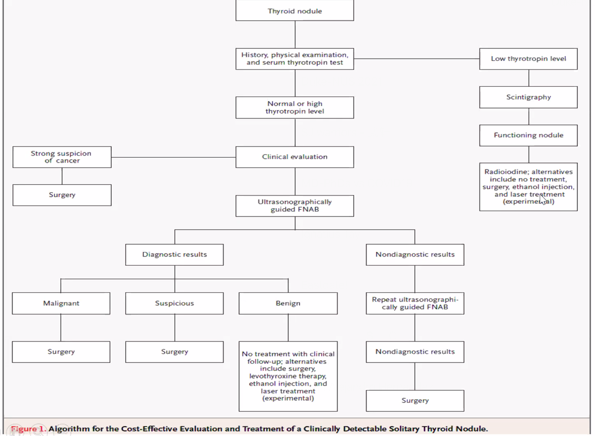
Useful Studies¶
Thyroid Panel - Thyroglobulin - glycoprotein that serves as a substrate for production of thyroid hormone. levels are elevated in differentiated papillary thyroid cancer, for which it is used as a cancer marker. Thyroglobuline levels are also elevated in goiter, Graves disease, and thyroiditis. - Thyroid scintigraphy uses radiolabeled iodine to assess iodine uptake as a marker for thyroid metabolic activity; papillary and follicular thyroid caners take up radiolabeled iodine. - Serum thyroxine is used in the initial diagnosis of hypo- and hyperthyroidism. - TSH is used to titrate levothyroxine in thyroid hormone replacement therapy.
Histology on FNA - Hurthle cells
Thyroglossal Duct Cyst (TDC)¶
Forms along path of thyroid descent during embryogenesis, which is from foramen cecum (base of the tongue) to base of anterior neck.
Presentation Incidental neck mass or tender neck mass after URTI
Presentation - Midline cystic neck mass - Moves superiorly with swallowing or tongue protrusion - Often present after upper respiratory tract infection (secondary infection) with erythema and tenderness - Associated with ectopic thyroid tissue
Management - Confirm presence of normal thyroid tissue - Surgical resection of cyst, associated tract, and central portion of hyoid bone to prevent recurrent infection - TDC associated with ectopic tissue any may be the only source of functioning thyroid tissue, thyroid imaging is required post-operatively
Inflammatory Thyroid Conditions¶
Hashimoto Thyroiditis¶
This is a chronic lymphocytic thyroiditis, and patients may have anti-thyroid peroxidase antibodies.
Thyroid Cancers¶
Management of thycoid cancer is based on risk stratification in order to make the following decisions 1. Extent of surgery - either lobectomy versus total thyroidectomy 2. Need for radioactive-iodide scan / ablasion (only in patients with total thyroidectomy) 3. Surveillance strategy
Total thyroidectomy - not indiciated if tumor is less than 1 cm - 1 - 4 cm total thyroidectomy only for patients with older age (>45 y/o) contralateral thyroid nodules, a personal history of radiation etc - >4cm and extension
Central compartment dissection - indicated in patients with clinically involved central node - may be considered in patients ith papillary thyroid carcinoma with clinially uninvolved central neck lymph nodes (cN0 ) who have advanced primary tumor (T3 T4) or clinically involved lateral neck nodes (cN1b) or if ino will be usd to plan further steps in therapy - Not inidicated, small, non invasive, follicular CA (no tendency to spread)
Radioactive Iodine - ATA low risk [T1a, N0, Nx, M0, Mx]; tumor size < 1cm (unilateral or multifocal) - not indicated - ATA low risk [T1b, T2, N0, Nx, M0, Mx]; tumor size 1 - 4 cm: Not routinely given by need to consider for patients with aggressive histology or vascular invasion - ATA low risk to intermediate risk [T3, N0, Nx, M0, Mx]: Need to be considered and take tumor size and age (55 y/o) into account - ATA low intermediate risk (T3, N0, Nx, M0, Mx) or (T1-3 N1a, M0, Mx ) or (T1-3, N1b, M0, Mx): favored - ATA high risk (T4 with any N or M or M1 with any T or any N): indicated Patients younger than 55, even with M1 disease, do very well. So the age cut-off is set to younger than 55.
Surgical anatomy - Suyperior laryngeal nerve has internal and external branch, worry injury to the external branch - Recurrent laryngeal nerve is important in patients with unilateral vocal cord palsy, sonographer need to cover the entire course of the nerve. - Ansa cervicalis to RLN re-anastomosis is mainly to preserve tone of the muscles, reduce largyngeal muscle atrophy; sometimes we can good movement, this is a bonus - Berry's ligament, condensation fiascia, thyroid attachment to the trachea; When trachea moves up during swallowing, the thyroid also moves up.
Surgical technique approaches - Central - Remote approach / laterally
The general reported laryngeal reccurent nerve damage in surgery rate is 5%; but 1 - 2% is more typical. Pathology report comes back in 1 week or so, start RAI then. Protocol for getting patient RAI - TSH more than 30 mIU before we can do RAI; to stimulate iodine uptake - Thyroxine withdrawal before TSH; may render patient hypothyroid - Give recombinant TSH two injections a few days before - Give T4 and then two days before the scan convert T4 to T3, render patient slightly hypothyroid
Nerve regeneration measure
Follicular Thyroid Cancer (FTC)¶
Medullary Thyroid Cancer (MTC)¶
Neuroendocrine malignancy arising from calcitonin-secreting parafollicular C cells. Most cases of MTC are sporadic, although approximately 25% are due to germline mutations in the RET proto-oncogene (e.g. MEN2 - MTC, pheochromocytoma, and either parathyroid hyperplasia (2A) or mucosal neuromas (2B)).
Presentation - MTC most commonly presents as an asymptomatic thyroid nodule. - A minority of patients have diarrhea and flushing due to hormones secreted by the tumor. - Unless there is concomitant hyperparathyroidism (e.g. MEN2A), serum calcium is usually normal, possibly due to down-regulation of calcitonin receptors.
Diagnosis and Evaluation - The diagnosis of MTC is confirmed with fine-needle aspiration. - MTC is often metastatic at the time of diagnosis, primarily to the cervical lymph nodes and upper aerodigestive tract, so always check.
Management - Primary treatment is thyroidectomy, and therefore postoperative thyroid replacement therapy (i.e. levothyroxine) is necessary. - Serum calcitonin levels correlate with the risk of metastasis and are measured at the time of diagnosis; they also correlate with risk of recurrence and are therefore measured serially following surgery. - Carcinoembryonic antigen also correlate with disease progression and is typically measured with calcitonin.